A-iPower
Компания A-iPower вышла на российский рынок в сентябре 2019 года и, с этого момента держит марку своего бренда на самом высоком уровне. Всего опыт производства компании в создании…
745 компаний MITEX 2026. Ищите по названию, описанию или номеру стенда; выбирайте страну, рубрику и зал.
Компания A-iPower вышла на российский рынок в сентябре 2019 года и, с этого момента держит марку своего бренда на самом высоком уровне. Всего опыт производства компании в создании…

ABC TOOLS MFG. CORP. (основана в 2006 году в Циндао) — производитель с надёжной базой: 3 завода и выпуск более 3 миллионов единиц продукции в год. Компания соответствует…

ADA Instruments торговая марка измерительного, диагностического и другого оборудования для строительства, геодезии, поиска подземных коммуникаций, неразрушающего контроля и диагностики.

Компания ООО «ИНТЕНС» официальный дистрибьютор торговой марки AEG lubricants - масел и смазок для садово-парковой техники и инструмента. В ассортименте представлены масла для 2Т и 4Т двигателей, масла…

Компания AIRLINE специализируется на разработке, производстве и реализации профессиональных автомобильных инструментов, ассортимент которых насчитывает более 3000 SKU. Компанию отличает уникальный подход к созданию и продвижения своих товаров. Каждый…

Мы являемся одним из ведущих индийских производителей и экспортёров смазочного оборудования, ручного и садового инструмента. Компания располагает современным производственным предприятием в Лудхиане, Индия, а корпоративный офис продаж находится…

Boxing Machinery делает садовые лезвия для газонокосилок, кусторезов, гольф-машин, корнерезов, игл аэрации. Высококачественная сталь, полный цикл, проверка балансировки. Лезвия твердые, вязкие, ударостойкие. Кастомизация по чертежам, лазерная маркировка. Совместимо…
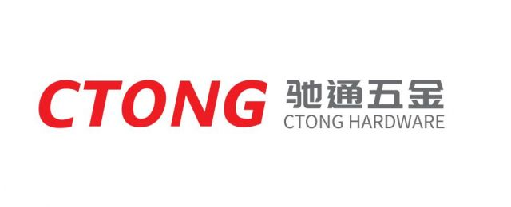
Anhui Chitong Hardware Technology Co., Ltd. является производителем высококачественных клепочных креплений, которые интегрируют исследования и разработки, производство и продажи креплений! CTONG охватывает площадь 20000 ㎡, имеет передовое производственное…
Кабельные стяжки из нейлона 66. Самозатягивающаяся конструкция для быстрой и надежной фиксации. Высокая прочность на разрыв, устойчивость к старению и огнестойкость. Подходят для электромонтажа, строительства, упаковки и наружных…
Кабельные стяжки из нейлона 66. Самозатягивающаяся конструкция для быстрой и надежной фиксации. Высокая прочность на разрыв, устойчивость к старению и огнестойкость. Подходят для электромонтажа, строительства, упаковки и наружных…
Завод проволочных сетей «Аньпин Саньсин» основан в 1990 году и расположен в уезде Аньпин – родине проволочных сетей Китая. За более чем 30 лет при поддержке коллег и…
О компании Цюаньшэн Шланг Основанная на Тайване в 1957 году, компания Chuan Hseng Co., Ltd. является ведущим экспертом в области резиновых материалов и химических решений. Мы также производим…

Бренд ARNEZI зарекомендовал себя исключительно с положительной стороны – высокое качество и надёжность продукции удовлетворяют высокие требования российского потребителя. Большая часть производства бренда ARNEZI сосредоточена на крупнейших, проверенных…
Компания Beijing Deyi Diamond Products Co., Ltd была основана в 2005 году и расположена в высокотехнологичном парке города Хуанган провинции Хубэй. Наш завод специализируется на проектировании, исследовании, производстве,…

Benchmark Media International Corp. is a Taiwan-based professional media and international B2B marketing company specializing in hardware, hand tools, automotive aftermarket and manufacturing industries. Through professional publications, international…

Best One Tools Pvt. Ltd. — ведущий производитель ручного инструмента, расположенный в Сангаль-Сохале, Джаландхар, штат Пенджаб — одном из крупнейших промышленных центров Индии с развитой транспортной инфраструктурой. Компания…
Прекрасное соотношение Цены и Качества - это главное и очевидное преимущество. Доступны широкому кругу потребителей. Высочайшая скорость вывода на рынок. Имеем отличную и готовую цепочку поставок-все компоненты (двигатели,…

BLOCKER — бренд-специалист в категории DIY, предлагающий решения для хранения и переноски инструментов, организации пространства в гараже и мастерской. На рынке с 2008 года, бренд зарекомендовал себя как…
Компания основана в 2007 году и расположена в Джаландхаре, штат Пенджаб. Специализируется на производстве скобяных изделий, готовых кованых компонентов и ручного инструмента.

Рождение бренда CAIMAN произошло во Франции в 2004 году. В это время компания Subaru (Япония) приняла решение о выходе на рынок двигателей для садовой техники. Французская компания Pubert,…
Компания, расположенная в уезде Сянь города Цанчжоу провинции Хэбэй, специализируется на исследованиях, разработке, производстве и продаже инструментов для ремонта автомобилей. В число её основной продукции входят пневматические домкраты,…
Мы специализируемся на аппаратных инструментах и инструментах обслуживания автомобилей для различных профессиональных приложений. Наша компания работает в качестве интегрированного производителя с специализированными производственными линиями для аппаратных инструментов и…
Общая сфера деятельности: изготовление металлических инструментов; Продажа металлических инструментов; изготовление оборудования; Оптовая торговля оборудованием; Продажа механических деталей и компонентов
Ручные инструменты из легированной стали, антикоррозийная обработка поверхности. В комплект входят ключи, плоскогубцы, отвертки, молотки для бытового и промышленного ремонта, разные размеры.
углеродная сталь / M3 ~ M48 класс 6,8 ~ 12,9 / стандартный и нестандартный / DIN, ISO, JIS, ANSI / компания с сертификатами ISO9001, IATF16949, EN15048, EN14399, ISO14001.
Компания Hoprio была основана в 2015 году и располагается в городе Чанчжоу (провинция Цзянсу). Производственные площади компании составляют 3000 квадратных метров, а штат насчитывает 300 сотрудников. Мы специализируемся…
Наша компания, основанная в 2004 году, является производителем абразивных материалов с покрытием в Китае и одним из крупнейших производителей таких материалов в стране. Мы являемся вице-председателем Китайской ассоциации…
Компания CHONGQING CAIRUI MACHINERY CO., LTD, основанная в 2006 году, расположена в городе Сипэн, район Цзюлунпо, Чунцин, Китай. CAIRUI MACHINERY — это крупная частная компания, занимающаяся проектированием, исследованиями…
Мы являемся оригинальным заводом по производству культиваторов, двигателей, водяных насосов и генераторов в Чунцине, Китай. Мы производим эту продукцию более десяти лет и экспортируем ее по всему миру.
1. Сельскохозяйственные машины, такие как мотобороны, двигатели, водяные насосы, генераторы 2. Гидроприводные агрегаты для сельскохозяйственных мотоборонов. Корпусы редукторов, зубчатые передачи. Детали двигателя, такие как картер, головка блока цилиндров,…
ООО «Чунцин Ханьчи Пауэр Технолоджи» находится по адресу: №518, проспект Юаньцю, посёлок Луохуан, район Цзяньцзин, г. Чунцин. Мы специализируемся на разработке, производстве и продаже универсальных малых бензиновых двигателей.…
ООО «Чунцин Хунмэй Технолоджи» — профессиональная компания, занимающаяся разработкой, производством и реализацией бензиновых двигателей, бензиновых генераторов, бензиновых водяных насосов, бензиновых опрыскивателей, бензиновых моек высокого давления, бензиновых газонокосилок и…
Компания Chongqing Huatian Haoli Machinery LLC, основанная в 1998 году, расположена в районе Шапинба, Чунцин, Китай. Основная сельскохозяйственная продукция — бензиновые и дизельные мотокультиваторы. Предприятие среднего размера с…
Компания Chongqing Huatian Haoli Machinery LLC, основанная в 2022 году, расположена в районе Шапинба, Чунцин, Китай. Основная сельскохозяйственная продукция — бензиновые и дизельные мотокультиваторы. Предприятие среднего размера занимает…
Компания Chongqing Keye Power Machinery Manufacture Co., Ltd., основанная в 2003 году, расположена в районе Цзюлунпо города Чунцин. Площадь предприятия составляет 34 077 квадратных метров. С момента основания…
Компания Zhejiang Leiya Electronics Co., Ltd (NASDAQ: RAYA) — профессиональный производитель мобильных источников питания с 2004 года, обладающий богатым опытом в области исследований и разработок, производства, маркетинга и…
Мы располагаем производственной базой площадью 350 000 квадратных метров, оснащенной современным испытательным оборудованием и сборочными линиями. Наша основная продукция – мини-культиваторы, насосные установки и генераторы.
Основанная в августе 1994 года, наша компания является негосударственным предприятием с сертификацией ISO, расположенным в Чунцине — одном из ключевых промышленных городов Китая. С момента своего основания она…
Компания Chongqing Shovalue Machinery Co., Ltd. является современным экспортным предприятием сельскохозяйственной техники, объединяющим НИОКР, производство и продажи. Основанная 8 июня 2021 года, она зарегистрирована в промышленном парке Саньцзяо,…
Компания Chongqing Wanggeng Machinery Manufacturing Co., Ltd. расположена в районе Шапинба, в деловом центре города Чунцин, недалеко от крупнейшего транспортного узла на западе Китая. Основанная в 2000 году,…
В наш текущий ассортимент входят мотоблоки с бензиновыми и дизельными двигателями, а также сопутствующие навесные орудия: лезвия, рисовые колёса, каналорезы, плуги и другие комплектующие. Мы также предлагаем гибкие…
CHONGQING WUGU POWER EQUIPMENT CO., LTD — ведущий производитель и экспортёр сельскохозяйственной техники, включая мотоблоки, культиваторы и тракторы. Производственная площадь: 8 000 м² Численность сотрудников: более 300 человек,…
Компания Chongqing Yinze Machinery Manufacturing Co., Ltd. специализируется на производстве малогабаритных бензиновых и дизельных двигателей общего назначения, маломощных генераторных установок, насосных агрегатов, мини-культиваторов, садовых культиваторов и механических деталей.…
Бензиновые и дизельные двигатели служат источниками энергии для различного оборудования. Генераторы обеспечивают автономное и резервное электроснабжение строительных площадок, коммерческих и жилых объектов. Сварочные аппараты предназначены для металлообработки и…
Наши производственные комплексы используют передовые робототехнические технологии и комплексные системы контроля качества, чтобы гарантировать высокую надёжность и эксплуатационные характеристики продукции. Наш завод — крупный производитель общего машиностроения и…
1. Сельскохозяйственные машины, такие как мотобороны, двигатели, водяные насосы, генераторы 2. Гидроприводные агрегаты для сельскохозяйственных мотоборонов. Корпусы редукторов, зубчатые передачи. Детали двигателя, такие как картер, головка блока цилиндров,…
ООО «Сиси Шэньюань Тул» является ведущим производителем садового инструмента, обладает мощным техническим потенциалом и современным оборудованием. Наша продукция включает тележки для шланговых катушек, распылительные пистолеты, соединители для шлангов,…
CONDTROL – международная инжиниринговая компания. Основное направление деятельности – проектирование, производство и реализация лазерных дальномеров, нивелиров и приборов неразрушающего контроля, предназначенных для бытового и профессионального использования. Лидер рынка…

Corediam Tools — профессиональный производитель алмазного инструмента, предлагающий надежные решения для резки, сверления, шлифовки и полировки клиентам по всему миру.
Cortool Manufacturing Group (основана в 1999 году) - ISO9001: 2015 Системы менеджмента качества Сертифицированная AEO компания, начиная с 2001 года, входит в CCCME и IHA с 2004 года,…
Daigain Industrial Co., Ltd. — это профессиональный производитель с более чем 30-летним опытом в проектировании, разработке и производстве различных видов сумок для инструментов, ремней для инструментов, наколенников, рюкзаков…
DALV является ведущим поставщиком высокопроизводительного электроинструмента для строительной, ремонтной и производственной отраслей.

Компания Cenda Tools занимается производством алмазных инструментов уже более пятнадцати лет. Благодаря нашим знаниям производственного процесса в сочетании с опытом работы на многих рынках и в различных областях…
Компания DANYANG CERES HARDWARE TOOLS CO., LTD является одним из профессиональных производителей в Китае, специализирующимся на всех видах сверл из быстрорежущей стали (HSS), электрических перфораторов, сверл по камню,…
Наша дочерняя компания была основана в 1965 году. В компании работает около 300 сотрудников. У нас имеется 7 производственных линий, включая сверлильные буровые долота/ножовки/балдовые ножи/вращатели и т.д. Наше…
HUANDETOOLS CO.,LTD является профессиональным инструментом FACTORY™ компания в китае, специализирующаяся на всех видах HSS сверла, литейные сверла, электротрический молоток сверла, пилы отверстий и других силовых инструментов аксессуаров.
Компания Danyang Juli Tools является поставщиком качественных режущих инструментов, таких как сверла, магнитные гайковерты и т.д.! в Китае. Мы поставляем такие продукты, как плоские сверла по дереву, магнитные…
Компания DANYANG MEITAI TOOLS CO., LTD. — это специализированное предприятие, работающее по схеме OEM и обладающее более чем 10-летним опытом производства алмазного инструмента. Мы специализируемся на выпуске алмазных…
Компания Danyang Sky Tools Co., Ltd. основана в 2003 году и специализируется на производстве и продаже алмазного инструмента. Основная продукция включает алмазные пильные диски, алмазные сверла по железобетону,…
Danyang Tianyi Diamond Tools Co., Ltd. — профессиональный производитель алмазного инструмента, основанный в 2006 году. Почти 20 лет мы специализируемся на разработке, производстве и экспорте алмазных отрезных дисков…
WEIWANG TOOLS – это инновационный специалист по аксессуарам для электроинструментов, ориентированный на инструменты для резки, шлифовки, сверления и разрушения строительных материалов. Наша основная продукция включает алмазные, абразивные, твердосплавные…
Наша компания специализируется на производстве автомобильных ремонтных розеток, бурильных штук и полного спектра ручных инструментов Мы имеем передовые производственные объекты и строгие системы контроля качества для производства прочных,…
Компания Dare-Power Tools (Danyang) Co., Ltd. — профессиональный производитель, специализирующийся на выпуске и экспорте всех видов режущего инструмента для металлообработки, деревообработки и каменной кладки. Благодаря современному производственному оборудованию,…
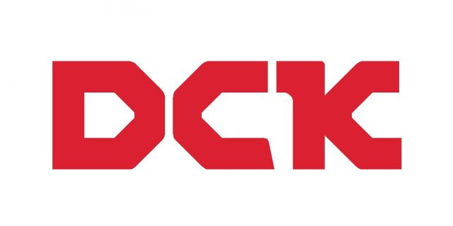
Бренд профессионального инструмента DCK принадлежит крупнейшему производителю электроинструментов и комплектующих в Китае, компании Jiangsu Dongcheng Power Tools Co., Ltd. Уже 11 год подряд компания занимает первое место по…

Основанная в 1979 году господином Джавахаром Лалом Джайном, компания Deeps Tools Pvt. Ltd. является признанным экспортным предприятием, созданным с целью поставки высококачественных ручных инструментов клиентам по всему миру.…
Специализируемся на производстве кримперов, стрипперов и резаков. Полная кастомизация — от дизайна до упаковки. Точность, долговечность, эргономика. Мы ценим долгосрочные партнёрские отношения. Посетите нас, чтобы обсудить ваши потребности.
Компания Диамир создана в 2004 году с целью продвижения инструмента и оборудования как собственной торговой марки DIAM, так и ведущих торговых марок в отраслях использующих алмазный инструмент в…
Компания Dongcheng производит электроинструменты, якоря, статоры и различные комплектующие. Официальные дилеры компании представлены во всех крупных городах Китая, а география продаж охватывает более 80 стран мира, включая страны…
«Дунгуань Болинг пластиковые изделия» основано в 2006 году и расположено в промышленном парке Баньху города Хуанцзян городского округа Дунгуань, занимая площадь 4000 квадратных метров. Специализируясь на производстве и…
Dongguan Habotest Instrument Technology Co., Ltd — инновационное технологическое предприятие с более чем 20-летним опытом работы в сфере исследований и разработок, литья под давлением, профессиональных производственных линий и…

Мы являемся частью Eastman Group с предполагаемым доходом в 400 миллионов долларов США. Мы производим выбранный ассортимент ручных инструментов мощностью 2 миллиона штук в месяц. Мы специализируемся на…

Бренд Redbo и Edon принадлежит китайскому заводу по производству электросиловой техники. Завод создан в сентябре 2001 года. Ассортимент производства включала в себя: сварочное оборудование, аккумуляторный и электро-инструмент, бензо-инструмент,…
Под брендом Ermenrich производятся измерительные приборы с немецким качеством. Ermenrich — бытовые и профессиональные измерительные инструменты: лазерные и классические рулетки, датчики влажности и газа, дальномеры, лазерные уровни, детекторы…
С момента основания в 1987 году мы специализируемся на разработке и производстве сверл, ножей, резцов для сверления, сверл из твердого сплава, пилок из карбида и резцов для резьбонарезных…
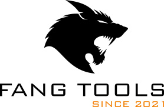
Наша компания вот уже более 4 лет работает на рынке строительной продукции. Имея опыт работы и сильную команду, мы предлагаем нашим партнерам следующее: - Качество, проверенное временем. Мы…
Fasten Fix производит глухие крепёжные изделия: гайки-заклёпки, заклёпки, клинч-крепёж, сварные шпильки. Сертификаты ISO9001, TS16949. Комплексные поставки. Большие мощности, стабильное качество, выгодные цены, своевременная отгрузка. Fasten Fix — ведущий…


FELISATTI - это имя с историей, заслужившее доверие профессионалов по всему миру. Основанная в 1949 году в итальянском городе Феррара, компания на протяжении десятилетий создаёт профессиональные электроинструменты, оснастку,…

Fengbao и NOKK — мощность, качество и инновации Fengbao и NOKK — бренды электроинструмента, объединяющие современные технологии, надежность и практичные решения как для профессионалов, так и для повседневного…
Благодаря передовым технологиям термической обработки и современному производственному оборудованию мы производим высококачественные стальные основы для твердосплавных дисковых пил промышленного назначения, а также основы для ленточных пил по металлу…
Мы — компания, специализирующаяся на производстве электроинструментов, основанная в 2010 году. У нас есть полный спектр производственного оборудования и техническая команда, которая стремится предоставлять клиентам высококачественные услуги по…

Основанная в 1950 году, компания FMI Limited является крупнейшим производителем измерительных рулеток, пузырьковых уровней и измерительных колёс на Индийском субконтиненте. Компания отличается высокой степенью вертикальной интеграции и располагает…
Сфера деятельности: производство генераторов и генераторных комплектов; производство двигателей; Продажа генераторов и генераторных комплектов; изготовление механического и электрического оборудования; Продажа механического и электрического оборудования; изготовление мощных электронных компонентов;…
ООО «Фучжоу Юнфу Хун Международная Торговля» основано в 2019 году, штаб‑квартира расположена в районе Цаншань города Фучжоу. Уставный капитал составляет 10 миллионов юаней, площадь собственной основной операционной базы…

Прямые поставки с завода Также предлагаем контрактное производство. Если вас заинтересует какая-либо продукция из нашего каталога, мы готовы оперативно предоставить образцы. Будем рады долгосрочному сотрудничеству!
1. Сосредоточьтесь на крепежных инструментах с более чем 28-летним стажем. 2. Завод производит аккумулятор / воздушный гвоздезабивной станок, компрессор. 3. Владеет 50 000 квадратных метров объекта и более…

Компания GoldManibus является производителем перчаток с 2023 года. Молодая и амбициозная команда поставила своей целью производство высококачественных перчаток по доступным ценам. Наш завод находится в Китае, и для…
1/ ИСТОРИЯ ГОЛЬТОЛ Основанный в 1992 году, с 34-летним опытом работы в отрасли пильных лезвий. Начал экспортировать через 4 года. Профессиональное производство круглых пильных дисков. 2/ GOLDTOL NOW…
Компания Gripwell, основанная в 1948 году, имеет более чем семидесятилетний опыт развития и производства ручного инструмента, благодаря чему стала одним из признанных лидеров отрасли. Gripwell — семейная компания,…
ООО «Гуандун Цзинай Пластик Продактс» специализируется на производстве высококачественных пластиковых крепёжных изделий из PA66, PA12, PP и других материалов. У нас есть модификации, устойчивые к перепадам температур для…
Guangdong QiangJinJiu Machinery Co., Ltd. является компанией, специализирующейся на производстве промышленных гвоздиков, с основным акцентом на катушечные гвоздики, облицовка гвоздиков, газовые гвоздики и декорационные степперы. Компания стремится к…
Wireking с 38-летним опытом в отрасли специализируется на производстве лестниц, стремянок, рабочих платформ и тележек для инструментов. Расположенная в Шунде, Фошань, компания Wireking стремится предоставлять качественную продукцию благодаря…
"Easy Fix Metal – профессиональный поставщик решений в области крепёжных изделий. Мы занимаемся проектированием, производством и поставкой широкой номенклатуры крепёжных элементов, включая заклепочную продукцию, вытяжные заклепки, заклепочные гайки,…
Компания RDEER Tool является профессиональным инструментальным предприятием, который объединяет проектирование, разработку, производство и продажу продукции, и его продукция продается по всей стране. Продукция компании экспортируется в Европу, США,…
Полотна для пил TEBON TCT изготовлены из высококачественного карбида и произведены с применением передовых технологий пайки, что обеспечивает стабильность резания, высокую точность и долговечность. Независимо от того, используются…
Основанная в декабре 1993 года, Hailian Saw Blade Technology Co., Ltd., является одним из первых производителей в Китае, производящих пильные лезвия, переменные пильные лезвия, многофункциональные пильные лезвия, ручные…

Hainago — B2B-маркетплейс для селлеров и оптовых покупателей с официальной доставкой товаров из Китая "под ключ", мгновенным расчетом стоимости, простой схемой работы, оплатой в рублях и низким порогом…
Мы в основном производим винты для сухих стен, винты для фанеры, винты для кровли и другие изделия. У нас есть собственное производство, оснащённое более чем 200 комплектами оборудования…
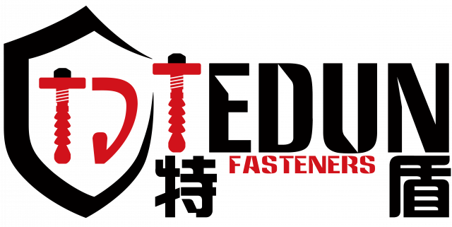
Бетонные саморезные анкеры с твёрдой резьбой нарезают резьбу в отверстии, демонтируются для повторной эксплуатации, подходят для трещинчатого и целого бетона и обладают высокой несущей способностью. Клиновой анкер‑надёжный распорный…
Цифровой штангенциркуль Цифровой угломер Цифровой индикатор часового типа Цифровой микрометр Цифровой уровень
《Фрекспро 》является опытным производителем абразивных инструментов с более чем 15летним опытом мы поставляем клиенам аботрезные и зачитсные круги ,шкурки , металические щётки и алмазные инструменты , а также…

Компания GreatStar основана в 1993 году, и сегодня это глобальный производственный холдинг с диверсифицированным бизнесом. Группе принадлежит вторая по величине в мире компания по производству ручного инструмента, а…
JIDAO Industrial — ваш производственный партнер в Китае в области малярных инструментов и изделий из стекловолокна. Мы объединяем квалифицированные производственные ресурсы, систему управления качеством и экспортный опыт, чтобы…
HangzhoКомпания Hangzhou Longer Saw Chain Co., Ltd. является профессиональным производителем цепей и направляющих пластин для пил в Китае. Мы являемся поставщиком потребительских и профессиональных цепей для пил, а…
Сфера деятельности компании охватывает оптовую и розничную торговлю, а также импортно-экспортные операции с различными категориями товаров. За годы работы, используя всю производственную цепочку в Ханчжоу и его окрестностях,…
В течение последних 20 лет мы специализируемся на проектировании и производстве инструментов, тесно сотрудничая с проверенными и авторитетными поставщиками комплектующих. Это позволило нам создавать индивидуальные наборы инструментов для…
Наша компания расположена в Сяошане, Ханчжоу. Основана 20 лет назад, мы специализируемся на автомобильных деталях шасси, крепёжных изделиях и мебельной фурнитуре.
Чжаньци – профессиональный производитель проволочных щёток. Мы инвестируем в разработку и исследование щёток в соответствии с потребностями наших клиентов. Компания Чжаньци всегда предлагает полный ассортимент высококачественной продукции по…

Hanskonner — российский бренд профессионального инструмента, разработанного для интенсивной эксплуатации в строительстве, ремонтных и монтажных работах. Техника Hanskonner рассчитана на ежедневные нагрузки, устойчиво работает в тяжёлых условиях и…
Hantronic Diamond Industrial Co.,Ltd — профессиональное производственное предприятие, специализирующееся на разработке, производстве и продаже алмазных режущих и абразивных инструментов. Основная продукция компании включает алмазные пильные диски, прецизионные сверла…
Профиль компании Хэбэйская компания по производству безопасных инструментов «Ботоу», основанная в 1983 году, является национальным высокотехнологичным предприятием, специализированным и высокоэффективным «маленьким гигантом» в сфере инноваций, а также компанией,…
GREENSON TOOLS — профессиональный производитель, специализирующийся на высококачественных алмазных инструментах и инструментах TCT в Китае. Опираясь на сильную техническую базу, квалифицированных работников и большой опыт, мы можем поставлять…
Анкеры фиксируются в кладке или бетоне; болты с гайками зажимают узлы; винты врезаются в материалы; штифты выравнивают или фиксируют детали; заклепки создают неразъемные листовые соединения; все изделия тщательно…
Инструменты для быстрого монтажа и крепления с совместимыми гвоздями и крепёжными элементами, безопасные, быстрые и удобные.
Компания Lihua внедрила стандартизированные системы управления и контроля качества, руководствуясь принципом «Ориентируемся на технологии, выживаем за счет качества, развиваемся за счет честности, получаем прибыль за счет бережливого управления».…
Мы — производитель-источник, объединяющий НИОКР, производство и цепочку от листового материала до готовой продукции. Продукция: нержавеющие ленты и хомуты для шлангов. Предлагаем услуги под ключ: подбор, разработка, кастомизация,…
Более 40 лет производим подъемное оборудование для заводов, складов, портов, логистики и строительства. Сертификаты ISO 9001 и CE. Собственное производство и НИОКР. Поставляем в 30+ стран. Надежное качество,…
Технологическая компания Hebei Songnan специализируется на производстве высококачественного крепежа. Наша продукция: саморезы для гипсокартона, газовые гвозди, монтажные гвозди, скобы, стальные полосовые гвозди и шпильки. Мы предлагаем надежную продукцию…
Хэбэй Тяньфэн металлические изделия ООО расположен в городе Синьтай, провинция Хэбэй, Китай, был основан в 1988 году. Компания производит широкий спектр высококачественных гвоздей, CKo6b, винтов, а также комплектующие…
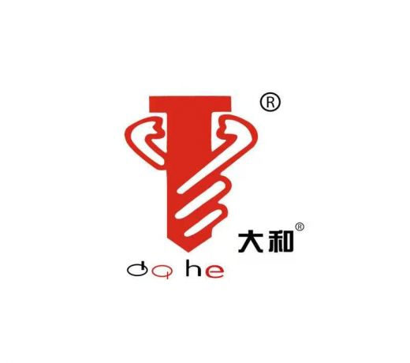
Более 23 лет мы — крупнейший и самый профессиональный производитель в Китае самосверлящих и самонарезающих винтов. 3 автоматизированных завода; мощность 80 000+ тонн в год. Применяются в металлической…
КОМПАНИЯ ОБЪЕДИНЯЕТ ПРОИЗВОДСТВО, ЭЛЕКТРООЦИНКОВАНИЕ, ГОРЯЧЕЕ ОЦИНКОВАНИЕ, УПАКОВКУ И ПОГРУЗКУ. ИМЕЕТ ТРИ ПОЛНОСТЬЮ АВТОМАТИЗИРОВАННЫХ ПРОИЗВОДСТВЕННЫХ ЦЕХА, БОЛЕЕ 200 КОМПЛЕКТОВ РЕЗЬБОНАКАТНОГО ОБОРУДОВАНИЯ, ЦЕХ ЭЛЕКТРООЦИНКОВАНИЯ И ЦЕХ ГОРЯЧЕГО ОЦИНКОВАНИЯ.
Специально для автомобильного инструмента включаются домкраты, торцевые ключи и другие инструменты для ремонта автомобилей.
Мы являемся прямым производителем.Специализируемся на производстве рулеток, отверток, канцелярских ножей, бытовых и промышленных ручных инструментов. У нас собственный завод и полное производственное оборудование, предоставляем услуги кастомизации OEM и…
Расположенная в крупнейшем в Китае центре по производству синтетических алмазов, городе Чжэнчжоу, компания производит все виды алмазных пильных полотен и алмазных шлифовальных кругов. Наш первый завод был основан…
SUPUS Abrasives была основана в 2006 году. За два десятилетия глубокого участия в производстве абразивных материалов мы накопили богатый опыт управления производством и зрелые технологии. Компания расположена в…

Наш завод производит все виды кольцевых режущих инструментов, включая кольцевые резцы TCT и HSS, кольцевые резцы для железнодорожного оборудования, магнитные сверлильные станки и другие адаптеры, карбидные пильные долота
Компания Хэншуй Тэнхуэй была основана 18 ноября 2004 года и занимает площадь более 25 000 квадратных метров. В компании работает более 300 сотрудников, включая свыше 20 специалистов по…
Более 20 лет производим материалы для защиты при малярных работах и авторемонте: drop sheets, masking film, двери на молнии, auto film и builders film. Поставляем сетям DIY, хозяйственным…

Hisener, известен как один из ведущих поставщиков саморезов и различных крепежных изделий во всем мире. Обладая современным заводом площадью 38 000 квадратных метров, оснащенным автоматической системой подачи материалов,…

Мы являемся профессиональным производителем высококачественного ручного инструмента, специализирующимся на производстве гаечных ключей. Располагая самыми современными производственными мощностями и квалифицированной рабочей силой, мы гарантируем, что каждое изделие соответствует строгим…
БОЛЕЕ 30 ЛЕТ ОПЫТА Компания Rhinails Fastener, основанная в 1996 году, уже почти три десятилетия стремится к совершенству в сфере производства крепежных изделий. Мы специализируемся на производстве гвоздей,…
Компания HUALI, основанная в 2001 году, специализируется на разработке электроинструментов. Площадь предприятия составляет 60 000 квадратных метров, штат — 1700 сотрудников, годовой объем производства — 7 миллионов единиц.
Основная продукция включает в себя пильные полотна для резки мрамора, дектона, гранита, фарфора, керамики, кварца, наностекла и различных искусственных камней; заготовки для алмазных дисковых пил; пильные полотна для…
Перевод текста о компании «Хунань Ба Сюнди Новые Материалы» на русский язык Акционерное общество новых материалов «Ба Сюнди» провинции Хунань основано в 1999 году. Это высокотехнологичное акционерное предприятие…
Компания Hunan Jiansimei International Trade Co., Ltd основана в Шаодуне (провинция Хунань) в 2023 году как универсальный поставщик внешнеторговых услуг. Мы открываем зарубежные рынки для китайских фабрик, предоставляем…
Компания Hunan Xianggong Environmental Protection Technology Development Co., Ltd. была основана в 2010 году и расположена в городе Чжэньчжоу провинции Хунань. Компания специализируется на исследованиях и продажах сварочных…

Компания I-GROUP- cпециализированное подразделение многопрофильной группы компаний, создающее качественные и доступные товары для строительства и ремонта. Наша цель – предложить идеальный баланс цены и качества в ключевых товарных…
INSTRUMAX - бренд измерительного инструмента, проверенный временем. Более 10 лет на российском рынке компания занимала нишу низкого и среднего ценового сегмента. Накопленный опыт и производственные связи выводят компанию…
Компания Jia County Yihong Abrasives Co., Ltd. является профессиональным производителем стекловолоконных опорных пластин. Мы запустили производственную линию по выпуску опорных пластин в 2009 году. До этого, еще в…
электрический паяльник, клей горячего расплава и его принадлежности.
С 2008 года компания PLUGTUL занимается производством проводов и кабелей. PLUGTUL обеспечивает высокое качество продукции на каждом этапе производства — от вилок с усиленными фиксаторами натяжения до строгих…
Jiande Yuanfeng Tool Co.,Ltd. Расположен в городе цзянде провинции желян, около 100 километров до ханчжоу и 300 километров до шанхая. Основанная в 1985 году, Yuanfeng является ведущим экспортером…
Компания JIANDE ZHENJIE HARDWARE TOOLS CO., LTD. — производитель с почти 20-летним опытом работы, специализирующийся на производстве наборов отверток, наборов бит и различных наборов ручного инструмента, которые в…
Основанная в 1985 году компания «Цзянсу Баолун Абразивы» расположена в Наньтуне на берегу Янцзы с отличной транспортной доступностью. Мы специализируемся на производстве шлифовальной ткани и наждачной бумаги. Пять…
Компания Jiangsu Chaofeng Tools Co., Ltd. известна как крупное предприятие с многолетним опытом профессионального производства и продажи пильных полотен. Основная продукция компании — алмазные пильные полотна, алмазные шлифовальные…
ООО «Цзянсу Дэбэсы Электромеханик Технолоджи» расположено в посёлке Люйсиган города Цидонг (Наньтун, провинция Цзянсу). Это специализированное базовое производство бесщеточных литиевых электроинструментов региона дельты реки Янцзы. Основная продукция –…
Мы являемся одним из крупнейших профессиональных поставщиков товаров для хозяйства и строительства в провинции Цзянсу (Китай) и находимся в городе Даньян — известном центре производства инструментов в провинции…
Компания обладает комплексной, научно обоснованной системой управления качеством, на протяжении многих лет стремится к постоянному внедрению инноваций в продукцию, совершенствованию дизайна и стандартов производства, поддерживая лидирующие позиции в…
Компания была основана в 1997 году, и ее продукция экспортируется в десятки стран и регионов, включая Европу, США и Юго-Восточную Азию. Компания была награждена почетным титулом 30 лучших…
JIANGSU GTIG HUATAI CO.,LTD. Создана в 1975 году, является одним из ведущих экспортеров ручного инструмента и, аппаратного обеспечения, садовых инструментов, повседневных товаров из китая. Мы можем поставлять все…
Компания Jiangsu Haitong Rigging Co., Ltd. была основана в 1975 году, занимая площадь в 20 000 квадратных метров и имея основной капитал в 60 миллионов юаней. В основном…
Цзянсу, производство, продажи как один из высокотехнологичных предприятий. Наша компания имеет идеальную команду дизайна, сложное оборудование для обработки. Компания идеально подходит по разумным ценам и послепродажному обслуживанию и…
Jiangsu Homshrin Industrial Technology Co., Ltd. расположена по адресу: улица Южная Хуанхай, №9, район Цзянду, город Янчжоу, к югу от реки Янцзы, к востоку от автомагистрали Пекин-Шанхай-Нинтон. Площадь…
Обладая более чем 30-летним опытом, мы являемся профессиональным производителем стальных канатов из нержавеющей стали и находимся в городе Синхуа, провинция Цзянсу, Китай. Около 80 % нашей продукции экспортируется…
Завод основан в 1982 году, у нас работает 220 сотрудников, площадь предприятия составляет 70 000 квадратных метров, месячный объём производства — 200 000 штук. Возможна оплата через банк…
Компания JIANGSU JIANFENG IMPORT&EXPORT CO., LTD занимается импортом и экспортом, закупками, аудитом международных транзакций, проверкой заводов и т.д. Предлагает полный ассортимент продукции под собственным брендом: инструменты переменного тока,…
Компания Jiangsu Jinxinlong Tools Co., Ltd производит алмазные пильные диски, пильные диски из легированной стали, шлифовальные круги, лазерные сверла, твердосплавные диски, электроинструменты, аккумуляторные инструменты и многое другое. Качество…
ООО «Цзянсу Линъи Тулз» расположена в городе Хоусян, Даньян, провинция Цзянсу — известной родине инструментов. Основное направление нашей деятельности — производство сверл, бит для отверток, принадлежностей для электроинструментов…
Наша компания Jiangsu Norix Tools Co., Ltd. — интегрированная торгово-производственная фирма с двумя собственными производственными цехами, специализирующаяся на поставках высококачественного ручного инструмента по всему миру. Более 20 лет…
Компания JSOrient основана в 2016 году и имеет отраслевой опыт с 1998 года. Мы производим и экспортируем сантехнические и автомобильные инструменты, предлагая оптовым клиентам OEM/ODM, СТМ, адаптацию продукции…
Цзянсуская компания "Пинэн Электрические Инструменты" расположена в экономической зоне развития Лусиган провинции Цзянсу. Наша компания является профессиональным производителем инструментов серии литиевых аккумуляторов. Объединяя зрелые рыночные концепции и стабильное…
Наша компания — профессиональный производитель сверл, предоставляющий высококачественные и эффективные сверла и режущие инструменты для различных отраслей промышленности. Благодаря многолетнему опыту в данной сфере, мы стремимся предоставлять нашим…
Компания из Наньтуна производит высококачественную стальную проволоку и канаты с 1983 года. Экспортируем продукцию в Корею, ЮВА, Ближний Восток и ЕС. Годовой выпуск — 30 000 тонн. Сертификация…
Цзянсу тяньхуа является предприятием с многолетним опытом производства плоских резьб из химического волокна, стягивателей, ремней безопасности трейлеров, проскальзывания, подвешивания ремня, ремней безопасности и других лямок. Он может обеспечить…
Мы производим металлические пружины на заказ с диаметром проволоки от 0,2 мм до 50 мм. В нашем ассортименте — пружины сжатия, растяжения, торсионные пружины, детали для проволочной формовки,…
Компания Jiangsu Xinsengyuan Instrument Technology Co., Ltd. расположена в городе Чанчжоу провинции Цзянсу, Китай, и является специализированным производителем комплексных приборов, включая манометры, термометры, приборы для измерения температуры и…
Цзянсу Синба Интернэшнл Трейдинг Ко., Лтд. расположен в Чжэньцзяне, провинция Цзянсу, Китай, и имеет независимые права на импорт и экспорт. Мы специализируемся на бурах и полном ассортименте строительных…
Завод, специализирующийся на производстве алмазных инструментов и сплавных пильных дисков
Jiangsu Yomei Tools специализируется на разработке и переработке алмазных инструментов и инструментов TCT, основная продукция компании включает в себя спеканное алмазное дисковое лезвие, алмазное циркулярное лезвие пилы, алмазное…
Jiangxi Chuanghui Tools (2017): два цеха, 260 сотрудников. Делаем степлеры, шестигранники, экспортируем по миру и странам «Пояса и пути».
Компания Jiangxi Zhiren Stainless Steel Products Co., Ltd. имеет более чем 30-летний опыт в области литья по выплавляемым моделям и литья под давлением. Её штат насчитывает 260 квалифицированных…
Компания JIEDA TOOLS имеет 25-летний опыт производства сверл, специализируясь на производстве ударных сверл SDS, долот и других изделий, в основном используемых в электрических отбойных молотках и других видах…
Различные виды перекачки жидкостей, включая непитьевую воду, бензин, дизтопливо и другие.
Производим грузовые ремни, стропы, ленту, крюки и пряжки CE, высокопрочные. Изготовление под размер и логотип, опт напрямую от завода.
Компания Jiangxi Zhiren Stainless Steel Products Co., Ltd. имеет более чем 30-летний опыт в области литья по выплавляемым моделям и литья под давлением. Её штат насчитывает 260 квалифицированных…
Сверло SDS-plus: корпус 40Cr, наконечник YG8C, твердость 48–50/88,5 HRC, для бетона без арматуры. Зубило SDS-plus из 40Cr (48–50 HRC) для долбления бетона и стен.
Компания JINGLING в основном занимается проектированием, разработкой, производством и продажей профессиональных сверхпрочных инструментов. Мы специализируемся на алмазных инструментах с гальваническим покрытием, алмазных инструментах с вакуумной пайкой, твердосплавных инструментах,…
Мы являемся одной из самых профессиональных компаний по экспорту каменных инструментов в китае с 1993 года, мы специализируемся на экспорте всех видов каменного бетона, строительных инструментов, включая алмазные…
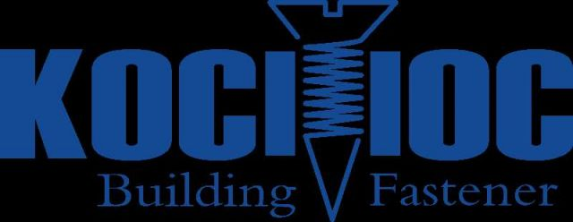
Jiaxing Chiayo Import and Export Co.,Ltd специализируется на производстве таких изделий, как винты для гипсокартона, винты для фанеры, самонарезные и самодурающиеся винты, винты для кровли, декоративные винты для…
Ведущий производитель, специализирующийся на широком ассортименте садовых инструментов, приспособлений для полива и садовых аксессуаров и т. д. С более чем 15-летним опытом работы.

Мы являемся профессиональным производителем и экспортером всех типов крепежных элементов, включая болты, винты, шпильки и заказные крепежные элементы. Мы поставляем крепления из углеродной стали и нержавеющей стали различных…
ООО «Цзиньхуа Фэнчуан Технолоджи» основано в мае 2018 года в районе Учэн города Цзиньхуа, уставной капитал 20 миллионов юаней. Высокотехнологическое специализированное предприятие производит цепи, направляющие шины и точные…
Компания Jinhua Glarystep Tools Manufacture Co., Ltd. является современным комплексным производителем, специализирующимся на исследованиях и разработках, производстве, продажах и послепродажном обслуживании магнитных инструментов и сварочного оборудования. Руководствуясь нашей…
Мы являемся профессиональным производителем бензопил, бензокосилок, бензосверл и высоконапорных омывателей. Наша продукция отличается стабильным качеством и конкурентоспособными ценами. Площадь нашего завода составляет 15 000 квадратных метров, штат —…
Компания JINHUA LUCK USE TOOLS CO.,LTD является профессиональным производителем пистолетов для герметика, пеногенераторов и смесителей для краски. Мы стремимся стать крупнейшим в мире производителем пистолетов для герметика и…
Jinhua Shenglai Import & Export Co., Ltd. является современным предприятием, которое интегрирует исследования и разработки, производство, продажи и обслуживание, специализирующееся на производстве багажа для аппаратных инструментов, теплоизоляционных сумок,
Jinhua Youte Measure Tools CO.LTD — профессиональный производитель, специализирующийся на выпуске различных измерительных инструментов. Среди них — алюминиевый ватерпас, пластиковый ватерпас, алюминиевый угольник, лазерный уровень и многое другое.…
Компания Jinyun Tengba Electric Appliance Co., Ltd. предоставляет комплексные решения в сфере бытовых, коммерческих и промышленных пылесосов. В сферу нашей деятельности входят НИОКР, проектирование, производство и международные продажи.…
Производство и продажа электроинструментов, сельскохозяйственной техники, садовых инструментов, садовой техники, пресс-форм, тренажеров, двигателей и запасных частей для штамповки; самостоятельный и агентский импорт и экспорт товаров и технологий, разрешенных…
САДОВЫЕ ИНСТРУМЕНТЫ, РУЧНЫЕ ИНСТРУМЕНТЫ, СЕЛЬСКОХОЗЯЙСТВЕННЫЕ ИНСТРУМЕНТЫ, ДЕТСКИЕ ИГРУШКИ, ТОВАРЫ ДЛЯ ОТДЫХА
Youde Hardware – мировой производитель фурнитуры. Инновации, качественный товар, выгодные цены и хороший сервис. Клиенты: малые фирмы и сети Home Depot, Lowe's, Castorama, Leroy Merlin.
Компания Julvon Power Machinery (Ningde) Co., Ltd. расположена в городе Фуань, который пользуется репутацией «китайской столицы малой и средней техники» и «китайской экспортной базы малой и средней техники».…
Основанная в 1999 году, группа Junhe специализируется на исследованиях и производстве отечественных водяных насосов. Группа Junhe создала широкий деловой след в производственном секторе. Ее промышленная цепочка в основном…
Мы являемся прямым производителем, специализируемся на изготовлении высококачественных швартовных канатов по конкурентоспособным ценам. Наша полная линейка продукции включает широкий выбор разновидностей канатов для удовлетворения любых индивидуальных технических требований,…
Продукция компании «Кантай Электрик» поставляется покупателям по всему миру. Основной ассортимент включает системы безопасности для умного дома (с поддержкой Wi-Fi, частот 433,92 МГц, 868,3 МГц и коммуникационного протокола…
Основанная в 2000 году, наша компания занимается разработкой, производством, продажей высококачественных профессиональных электроинструментов и сопутствующими техническими услугами, всемерно помогая клиентам повышать эффективность работы. За годы работы бренд и…
Основанная в 2000 году, наша компания занимается разработкой, производством, продажей высококачественных профессиональных электроинструментов и сопутствующими техническими услугами, всемерно помогая клиентам повышать эффективность работы. За годы работы бренд и…

KEOS - бренд профессионального алмазного инструмента и оборудования для строительных, монтажных, инженерных и отделочных работ. Компания поставляет комплексные решения для алмазного бурения, сверления, резки и шлифовки твёрдых строительных…
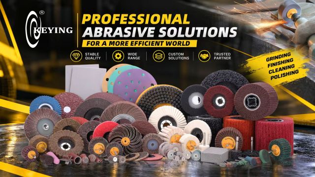
KEYING ABRASIVES — ВЫСОЧАЙШЕЕ КАЧЕСТВО ИЗ КИТАЯ Компания Keying Abrasives, основанная в 1997 году, является одним из ведущих китайских производителей лепестковых кругов на оправке. Передовые технологии производства, строгий…
Профессиональное предприятие по производству бесщеточных электроинструментов. У нас есть собственная литьевая мастерская, цех по ремонту двигателей, испытательная лаборатория и т.д.

Инструмент и оборудование KOLNER Продукция бренда KÖLNER позиционируется как электроинструмент для тех, кто верит в свои силы и готов самостоятельно решить задачу любой сложности. Благодаря развитию современных технологий…
Виброплиты Резчики швов Глубинные вибраторы Фрезеровальные машины Вибротрамбовки Виброрейки Станки по работе с арматурой Затирочные машины Катки Мотопомпы Генераторы Тепловые пушки Лестницы

С самого становления ООО «СДС» сосредоточила свои усилия на производстве и поставках электротехнической и светотехнической продукции. Это основная специализация с 1996 года. За это время компания стала одним…

Компания GEMDA была основана в 2013 г и является высоко технологичным предприятием, сфокусированным на развитии и производстве пильных полотен. Головной офис компании находится в технологической зоне города Шицзячжуан,…
Лайчжоу Хунъюань Бенч Вайс Мануфакчуринг Ко., Лтд. была основана в 1998 году и насчитывает около 400 рабочих и сотрудников. Это профессиональный и крупнейший производитель столовых тисков в Китае.…
ООО «ЛАНБУМ ПОЛИМЕР (ЦЗЯНСУ)» – промышленный производитель‑OEM с более чем 20‑летним опытом выпуска резиновых шлангов, шланговых барабанов и сопутствующей продукции. Площадь нашего завода составляет около 55 000 квадратных…
Ланфан Босен Новые Материалы Технолоджи Ко., Лтд. расположена в уезде Дачэн города Ланфан провинции Хэбэй, специализируется на производстве литиевых электрических газонокосилок, литиевых электрических ручных мотоблоков, литиевых электрических рыхлителей…

LAVR — фамильная компания, производящая автохимию, автокосметику, мотохимию и бытовую химию. За более чем 25-летний опыт на рынке LAVR заслужил репутацию авторитетного бренда, которому доверяют, знают и рекомендуют.…
Наша компания является научно-техническим предприятием, специализирующимся на исследованиях и разработках в области канатов. Продукция компании включает серию проволочных канатов для лифтов средней и высокой скорости; серию стальных проволочных…
Компания Orientcraft основана в 2002 году и обладает богатым опытом в производстве различных абразивных изделий. Наша деятельность основана на анализе рыночных потребностей, разработке новой продукции, исследовании и контроле…
Мы являемся профессиональным производителем ударных сокетов с более чем 20летним опытом работы. Мы установили хорошие партнерские отношения с клиентами из европы, ближнего востока, южной америки, азии, США и…
Завод автомобильных инструментов Linqu Xinzhai Fuhao специализируется на пневматических и ударных торцевых ключах для авторемонта. Мы осуществляем самостоятельную обработку и изготовление на заказ, принимая заказы как внутри страны,…
Основные продукты включают гидравлические домкраты, автомобильные инструменты, светоотражающие костюмы, треугольные предупреждающие знаки, прицепные крючки для транспортных средств, автомобильные опоры безопасности и так далее
Самопроизводитель и самопродающиеся: литиевое электрическое освещение 21 В, защитные шлемы, светоотражающая одежда, полный спектр ручных инструментов
На стенде три производителя. Мы делаем прочные пластиковые кейсы для инструментов. Один партнер поставляет светодиодные фонари и вентиляторы на литиевых батареях. Другой выпускает электрические заклепочные пистолеты. Литиевые инструменты…
Tuojin Имеет 20 - летний опыт производства и имеет два независимых специализированных завода. Предоставляет огромные преимущества с точки зрения затрат, своевременную доставку и гибкую настройку. Единое закупочное решение…
Мы поставляем скобяные изделия и ручной инструмент. Высокое качество по выгодной цене. Ждём ваших запросов.

Medallay Group India — индийская производственно-экспортная группа, обладающая богатым опытом в сфере промышленного и профессионального инструмента. Через компании Medallay Exports и Reviverz группа предлагает широкий ассортимент продукции для…

Компания Medalyan, основанная в 2003 году, зарекомендовала себя как один из ведущих брендов в сфере оборудования для полива сада. С момента основания компания уделяет особое внимание качеству, инновациям…
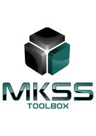
Компания ООО "МКСС" основана в 2019 году. Мы специализируемся на реализации высококачественных строительных инструментов и расходных материалов торговой марки MKSS Toolbox: алмазные и пильные диски; различные коронки; биты;…
ООО "ЦКП МЭИ" ведёт свою историю с 1996 года. Компания является собственником и основным поставщиком на территорию РФ товаров под торговой маркой Mr.Logo. Более 25 лет торговая марка…
Компания специализируется на разработке и производстве литий-ионных аккумуляторов
Компания NANCHANG STEADY MANCHINERY занимается проектированием, производством и продажей моторов, насосов, генераторов, моек, малой строительной и садовой техники.
Наша компания, следуя бизнес-философии «выживание за счёт качества, развитие за счёт инноваций», создала комплексную систему управления для дальнейшего повышения стабильности качества продукции. «Отличные продукты, лучший сервис, постоянная удовлетворённость…
С 2006 года компания TOOLJOY специализируется на производстве высококачественных инструментов и аксессуаров, в том числе битов и наборов для отверток, держателей битов, гаечных ключей, шестигранных ключей, головок для…
Компания, занимающаяся продажей химических волокон, химических добавок и промышленных нитей и т.д., была основана 31 мая 2016 года. Основные виды деятельности включают: производство, переработку и реализацию химических волокон,…
Наша серия электроинструментов включает в себя широкий ассортимент проводных и аккумуляторных электроинструментов, в том числе электродрели, угловые шлифовальные машины, перфораторы, гаечные ключи, пилы и другие промышленные и бытовые…
Ведущий производитель бесщеточных электроинструментов профессионального уровня на 230 В, включая угловые, прямые шлифовальные машины и канавок. Мы также производим промышленные шприцы для смазки на литиевых батареях. Добро пожаловать,…
Компания Nantong Full Optoelectronics Technology Co.Ltd была основана в 2011 году, занимает более 600 метров, здесь работает 70 человек. У нас также есть собственная команда по исследованиям и…
Компания Metalpower Industries расположена в Наньтуне. Благодаря своим возможностям лазерной резки, складывания и сварки, компания Metalpower Industries специализируется на поставке компонентов и предварительно собраных комплектов для сортировочной и…
Поставка абразивных материалов: шлифовальная сетка, шлифовальная губка, лепестковые круги, шлифовальные ленты, шлифовальные диски на липучке и другие абразивные материалы
Компания Nantong Sanv Mechanic and Electronic Technology Co., Ltd. была основана в 2011 году и расположена в городе Хайань, провинция Цзянсу, Китай. Мы специализируемся на проектировании и производстве…
Наш завод в основном занимается производством электроинструментов, запасных частей и внешнеторговых продаж. Он имеет два отдельных бренда, NEWBEAT и SARRED, зарегистрированных в более чем 70 странах, включая страны…
Высокотехнологичная компания ТУАНЬ Мехатроникс, самостоятельно разрабатывает покрасочное оборудование, качественная продукция экспортируется по всему миру.
The Nantong Victory Power Tool Companyявляется пионером в области электроинструментов. Компания занимает площадь 40 акров и насчитывает более 150 сотрудников. Компания имеет сильную технологическую силу, передовые технологии, хорошо…
Производство и продажа пневматических и электрических инструментов; производство, оптовая и розничная продажа скобяных изделий; продажа механических деталей и компонентов; эксплуатация проводов и кабелей; продажа аккумуляторов; продажа изделий из…
NIKKO LIMITED – крупная универсальная фирма, основная продукция: ручной инструмент и электротовары. У нас большой экспортный опыт, товары популярны в Европе, ЮАР и Азии. Мы принимаем заказы OEM,…
Добро пожаловать на заводской сад AMI. Сад AMI был основан в 2014 году, занимает площадь 16 500 квадратных метров и насчитывает более 200 сотрудников. Наши основные продукты включают…
Brilliant Dragon (Ningbo Brilliant Dragon Electronic Technology Co., Ltd.) — производитель светодиодных дорожных фонарей, сигнальных конусов, стрелок-указателей и жезлов безопасности. Поставляем дистрибьюторам, автопаркам и OEM-партнёрам сертифицированные решения.
Chenli является профессиональным производителем освещения в Нинбо, Китай. Мы работаем в этой области более 15 лет, занимаясь исследованиями, разработкой и производством различных серий освещения. В зависимости от передовых…
Компания Ningbo Crest tools co., LTD., расположенная в Нинбо, «столичной провинции» Китая по производству оборудования, была основана в 2007 году. Она специализируется на производстве различных наборов инструментов и…
Компания Ningbo Dongrun — профессиональный производитель, занимающийся исследованиями, разработкой, производством и продажей садовых шлангов, садового инвентаря и других ручных инструментов, с почти 30-летней историей. Наше современное предприятие, занимающее…
Наша фабрика уже 18 лет специализируется на производстве алюминиевых ватерпиров. Площадь нашей фабрики составляет 15 000 квадратных метров. У нас работает более 150 сотрудников. Мы можем производить 5…
Ningbo Fusle Mechanical Manufacturing Co., Ltd.является специализированным производителем высоконапорных моечных машин, занимающимся исследованиями и разработками, производством, а также сопутствующей продажей. Завод был основан в 2007 году и управляет…
Наша компания была основана в 2020 году и специализируется на разработке и производстве отверток. На заводе имеются производственные цеха: пресс-форм, металлообработки, литья под давлением, контроля качества, упаковки и…
Мы специализируемся на разработке, производстве и продаже газонных и садовых инструментов. Нашими преимуществами являются сильная разработка, высокое качество и низкая стоимость. Сильная разработка - наши инженеры имеют более…
Компания Ningbo J&J специализируется на канцелярских товарах и инструментах с 16-летним опытом, предлагая более 5000 товаров в рамках комплексного решения. У нас есть два зарегистрированных бренда: H-TONE —…
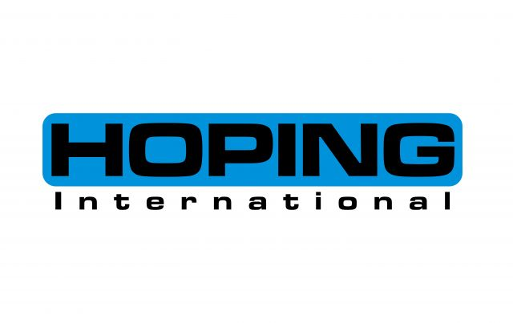
Наша компания специализируется на производстве крепёжных изделий и штамповано-вытяжных металлических деталей. В ассортимент крепёжных изделий входят шестигранные болты, винты с внутренним шестигранником, машинные винты, саморезы, шестигранные гайки, фланцевые…
ООО «Нинбо Хуичуан Тулс», основанная в 2002 году в Нинбо, специализируется на производстве измерительных инструментов. Имея 20-летний опыт, мы предлагаем качественную продукцию, профессиональную техподдержку и надежное послепродажное обслуживание.
Значения, которые характеризуют производство Kinbox, являются качеством и универсальностью изделий, организацией и настройкой рабочих станций, наклеивают на них более эффективные, оборудованные и приятные.От обязательств Kinbox, направленных на то,…
Основанная в 2024 году в городе Юяо, провинция Чжэцзян, наша компания специализируется на сельскохозяйственной технике, продукция которой хорошо продается на европейском и американском рынках. Мы ориентируемся на экологически…
Компания Ningbo Match-light, расположенная в городе Нинбо, Китай, основана в 2002 году. Мы являемся профессиональной компанией по производству всех видов шланговых соединений и имеем в своем штате несколько…
Компания PANYI tools (1992) — производитель и экспортер садового ручного и слесарного инструмента. Мы национальное высокотехнологичное предприятие, разработчик отраслевых стандартов, сертификаты BSCI, GS, MID, ISO9001, ISO14001, ISO45001.
NINGBO SINPPA AIR TOOLS FABRY была основана в октябре 2001 года, профессиональный производитель AIR TOOLS / SPRAY GUN / AIR SHLAPE / TIRE REPAIR INSTRUMENTS. Мы глубоко связаны…
Ningbo Лучший партнер Инструменты Производство Co., Ltd расположен в Yuyao, Нинбо, Китай, мы производим многие виды розетки, Spanner особенно серии решетки ключа и многие виды наборов инструментов ключа,…
набор торцевых ключей, набор ударных торцевых ключей, трещотка, набор инструментов, наборы инструментов для ремонта
Пневматический инструмент и комплектующие детали. Предназначены для промышленной очистки, ремонта и технического обслуживания оборудования. Приводятся в действие сжатым воздухом, обладают высокой прочностью и стабильной работой.
VERTAK основана в 1998 году в Нинбо. Это международный поставщик садового инструмента, специализирующийся на товарах для садов и открытых пространств. Будучи одним из крупнейших экспортеров в садовой отрасли…
ООО «Нинбо Вэйфэн Фастенер» основано в 2006 году, выпускает крепеж. У нас 4 завода и свыше 400 станков, делаем болты, гайки, анкера. Годовые продажи 25 млн долларов, предоставляем…
Ningbo Wodafeng Hardware Technology Co., Ltd. предлагает комплексные решения по металлическим деталям: разработка, пресс-формы, штамповка, токарная обработка и сервис. Производим хомуты, метизы и детали для автомобилей, сантехники и…
RGN, основанная в 2001 году, является профессиональным производителем пневматических гвоздезабивателей. Много лет сосредоточившись на научно-исследовательских разработках и управлении предприятием, мы поставляем полный ассортимент инструментов: пневматические гвоздезабиватели, рулонные гвоздезабиватели,…
Деятельность компании Ningbo Yinzhou Junji Rigging Co., Ltd. включает в себя: ремни с храповым механизмом; товары общего назначения: автозапчасти; металлические изделия; скобяные изделия; изделия из пластмассы; электротехнические аксессуары;…
Компания HOTAK TOOLS — один из ведущих китайских специалистов по производству ручного инструмента, особенно шестигранных и Torx ключей, степлеров, прецизионных отверток, модельных ножей и других высококачественных наборов ручного…
Компания Ningbo Yixun Tools Co., Ltd., основанная в 2015 году на базе Yide, занимается исследованиями, разработкой, дизайном и продажами. Дополняя Yide, обе компании развиваются совместно. Мы придерживаемся принципов…
NINGBO YOUTUO TOOLS CO., LTD – это профессиональный производитель шестигранных ключей, объединяющий разработку, производство и продажи. Современные полностью автоматизированные производственные линии и строгая система управления качеством помогают нам…
Компания Henan Ningrui Abrasives Products Co., Ltd. является профессиональным производителем алмазного инструмента, включая алмазные шлифовальные насадки, насадки, напильники и режущие лезвия, сверла для маникюрных аппаратов и т. д.
Компания Novastro Co., Ltd. производит и экспортирует промышленные инструменты из материкового Китая и Тайваня в мировые рынки для профессионалов, которым требуется высокая производительность и долговечность на на рабочем…
Yuyao Pike Tool Manufacturing Co., Ltd. была основана в 2006 году. Компания расположена в Юяо, известном городе оборудования в провинции Чжэцзян, прилегающем к Шанхаю и Ханчжоу, с удобным…
Оптовый поставщик малярного и строительного инструмента (уровни, правила) европейского производства. Представитель белорусского производителя садового инструмента.
Parget Industrial Co., Ltd. Основание и производственные мощности: Компания Parget была основана в 1983 году на Тайване. Пройдя путь от экспортера ручного инструмента, она выросла в глобального производителя…
Компания PEGATEC Abrasives Co., Ltd. — известный производитель специализированных абразивных инструментов из смолы, одна из самых влиятельных компаний в Азии. С более чем 43-летним опытом производства мы создаем…

POWERAC — бренд современной энергетической техники, ориентированный на надёжность, высокую производительность и продуманные технические решения. Основное направление компании — генераторное оборудование для дома, бизнеса, строительства и профессионального применения.…

Powertex Tools — один из ведущих индийских поставщиков электроинструмента, ручного инструмента и комплектующих. Штаб-квартира и основной дистрибьюторский центр компании находятся в Хайдарабаде. Складской ассортимент включает более 100 000…

ОСНОВНЫЕ КЛИЕНТЫ PROFIPOWER — это оптовые компании, розничные сети, B2B-покупатели, маркетплейсы и региональные дистрибьюторы по всей России. НАША МИССИЯ — сделать профессиональные инструменты доступными для всех. Мы стремимся…

Наша компания является одним из крупнейших производителей садового инструмента в Азии. Наша компания сертифицирована по стандартам ISO 9001:2015, ISO 14001:2015, BSCI, SCAN и FSC. Мы являемся одной из…
Завод по производству замков Baoer был основан в 1998 году. Наша продукция в основном представлена латунными замками, основная продукция: штифтовые латунные замки, квадратные ключевые латунные замки, латунные замки…
Pujiang Qiujing Hardware Tools Co.Ltd была основана в 2001 году, специализируется на производстве магнитных инструментов. Продукты высокого качества, широко используемые в автомобилях, мотоциклах, машиностроении и домашнем гараже. В…
Компания Qidong Mingrui Tools Co., Ltd. расположена в городе Цидун, родине инструментов на литиевых батареях, и занимается производством и продажей таких инструментов. Наша продукция включает в себя электрогаечные…
Компания QINGDAO EVERGRAND TRADE CO.,LTD., основанная в 2014 году, является профессиональным предприятием, специализирующимся на исследованиях, разработках, продажах и комплексном послепродажном обслуживании сельскохозяйственной техники, садовой техники, оборудования для переработки…
Компания Qingdao Homeshine Logistics Equipment Co., Ltd. является профессиональным производителем тачек, контейнеров на колесах, проволочных поддонов, стеллажей, тележек для молочной продукции, инструментальных тележек, изделий из алюминия и пластика…
Компания Qingdao Huawei Tools&Hardware, основанная в 1985 году, является ведущим мировым производителем слесарных тисков. Фирма поставляет товары известнейшим мировым торговым сетям: The Home Depot, Bauhaus, Hornbach, Lidl, Aldi…
Мы, Qingdao Leagle Industry Co., Ltd., является одним из крупнейших и старейших специализированных экспортеров и производителей в китае для рулевых тележек, толкая тележки, садовая тележка, тележки для ручных…
Компания Lixiang Yutai — ведущее производственное предприятие, специализирующееся на проектировании. Наша основная продукция включает в себя детали, изготовленные методом точного литья, штамповки и обработки на станках с ЧПУ.
Циндаоская компания "Миндэ Синьцзэ Трейдинг Ко., Лтд." расположена в провинции Шаньдун, Китай. Компания специализируется на экспорте металлических изделий, абразивов и абразивных инструментов, аэрозольных восстановительных красок, красок различных цветов,…
Мы одна многонациональная компания с двумя заводами в Китае и одним в Таиланде. Мы производим всевозможные полиэтиленовые тенты и экспортируем их по всему миру, включая США, Канаду, Японию,…
Наша компания со штаб-квартирой в Южной Корее является крупнейшим в мире производителем полиэтиленовых брезентов. У нас есть производственные предприятия во Вьетнаме, Китае и Южной Корее. Мы гарантируем своевременную…
Qingdao Yuantai Plastic Co., Ltd, которая была основана в 2009 году с профессиональным производителем и экспортером полиэтиленового брезента. Наш завод расположен в городе Циндао, провинция Шаньдун, Китай. Фабрика…
Основанная в 2012 году в Циндао, компания Qingdao Xinyunda Hardware Products Co., Ltd. является профессиональным производителем хозяйственных инструментов, выпускающим тысячи видов ручных и садовых инструментов. Компания пользуется высокой…
Qingdao Xiyuan Plastic & Rubber Co., Ltd является ведущим производителем и экспортером. lt стремится обеспечить полный ofhose решения для клиентов. Мы ориентированный на клиента завод с сильным акцентом…
Мы являемся комплексной компанией, специализирующейся на исследованиях, производстве и продаже инструментов. Наш бренд AIRAJ ориентирован на предоставление пользователям по всему миру высококачественных профессиональных ручных инструментов, электроинструментов и решений…

Quan Tian обладает комплексными возможностями в области исследований, разработок и производства. Около 80% производственных процессов выполняется непосредственно на нашем собственном заводе. Мы используем автоматизированное оборудование и строгую систему…
ООО «Цюаньчжоу Чжуоши Суперхард Тул» является поставщиком алмазного инструмента, включая дисковые алмазные пилы, пилы для керамики, алмазные сверла, сверла для фарфора, алмазные сегменты, алмазные чашечные шлифкруги, алмазные полировальные…

RAGE и RAGE Furious - выбор профессионалов, которые ценят своё время: сочетание характеристик, которые обеспечивают бесперебойную и аккуратную работу на продолжительном ресурсе

RDT (Royal Dragon Tools) — бренд профессионального аккумуляторного электроинструмента компании Jiangsu Zhenshanmei Intelligent Technology Co., Ltd., расположенной в провинции Цзянсу, Китай. Опираясь на 20-летний опыт в сфере производства…
Ищете высококачественные колёса из нержавеющей стали? Обратите внимание на продукцию из Чжуншаня! Мы предлагаем промышленные и медицинские решения, устойчивые к коррозии и рассчитанные на экстремальные нагрузки. Наши преимущества:…
Компания Wenda (Чжэцзян) International Freight Forwarding Co., Ltd., профессиональный китайско-российский поставщик услуг по интегрированным цепочкам поставок, имеет первоклассную квалификацию в области экспедирования грузов Министерства торговли и уже более…

Retail.ru — это ведущий отраслевой портал о рынке розничной торговли, который ежедневно публикует новости, аналитику и интервью с лидерами ритейла, помогая профессионалам быть в курсе главных трендов и…
ООО «Римоо (Фошань) Технологии Электробытовой Техники» — инновационная компания по производству бытовой техники, специализирующаяся на проектировании и изготовлении уборочной техники. Многолетний опыт работы в отрасли и инновационные решения…
Клещи изготовлены методом свободной ковки, вся деталь проходит термообработку для повышения прочности и долговечности, режущие кромки закалены индукционным способом для идеальных режущих свойств. Материал: углеродистая сталь или хромованадиевая…

Наши бренды : Mitssu, Liman, Hifazat Производство : Китай, Турция, Иран, Индия, Белорусь Надежное партнерство Мировые стандарты качества Широкий ассортимент нашей продукции включает в себя: сантехнику, товары для…
Высокоточный датчик, стабильные и мгновенные показания, защита от перегрузки, влаго- и пылезащищенный корпус, большой ЖК-дисплей высокой четкости с подсветкой, переключение единиц измерения (г/кг/фунт/унция), функция тарирования (обнуления), автоматическое отключение,…
мешок инструментов, ручные инструменты, электроинструменты и аксессуары для электроинструментов
Гипсокартонный шлейф с светодиодным светом Гипсокартонная шлюпка с переменной скоростью Гипсокартонный шлюпчик с сбором пыли Гипсокартонный шлайдер с растяженной ручкой Гипсокартонный шлайдер для попкорнового потолка Mixer Резчик плитки

Компания Solid Cargo Solutions (SCS) - ваш надежный партнер в области грузоперевозок из Китая. Мы предоставляем услуги по доставке грузов любых видов и объемов, от малогабаритных до крупногабаритных…
Для меня большая честь познакомиться с вами. Я Ричард Куан, менеджер отдела экспорта компании Shandong Bester Power Tools Co., Ltd. Мы являемся профессиональным производителем электроинструментов в городе Жизяо…
Компания Shandong BESTOR Garden Machinery Co., Ltd. — ведущий китайский производитель садовых воздуходувок с двигателем внутреннего сгорания. Мы успешно работаем на этом рынке уже 22 года. Наша продукция…
Наша компания специализируется на производстве станочных тисков, слесарных тисков, плоских зажимов и приспособлений для сверлильных станков. Приглашаем к сотрудничеству, гарантируем контроль качества и полное послепродажное обслуживание.
Производство ручных инструментов, электроинструментов и комплектующих.
Shandong Herda — производитель кабельных стяжек из нейлона, нержавеющей стали, ПТФЭ, PEEK, PA46 и PLA. Мы предлагаем стабильное качество, оптовые поставки и индивидуальные решения для промышленных клиентов и…
Shandong Huimin Jinniu Chemical Fiber Products Co., Ltd. была основана в 1999 году. Компания в основном производит продукцию из химического волокна, такую как лифтовая слинга, решетка, узел безопасности,…
Интеллектуальная телекомандная газонокосилка представляет собой передовой садовый инструмент, сочетающий в себе точность ручного управления и удобство интеллектуальной автоматизации, что позволяет эффективно обслуживать газон. Эти машины можно управлять с…
Компания Shandong Panggu Industrial Co., Ltd. была основана в 1966 году и имеет почти 60-летнюю историю производства. Основная продукция компании — это топоры, молоты, кирки, грабли, ножи, лопаты,…
Шаньдун Синъю Гловз Ко., Лтд. – производитель защитных перчаток, специализирующийся на научно-исследовательских разработках, производстве и реализации продукции. Компания основана в 1992 году, ее территория занимает более 800 акров,…
Компания Zhengbang Plastic специализируется на производстве полиэтиленовых тентов. Наши тенты сохраняют гибкость при температуре -30°C. Они изготовлены из первичного полиэтилена, устойчивы к разрыву и на 100% водонепроницаемы.
Мы являемся профессиональным производителем электроинструментов и цифровых измерительных приборов в Китае. Наша продукция продается более чем в 30 странах и пользуется хорошей репутацией. Основные рынки сбыта — Европа,…
Компания Binic Abrasive является ведущим производителем высококачественных абразивных покрытий и алмазных инструментов. Мы производим алмазные диски/абразивные материалы на связке/покрытые абразивы/отрезные диски/лепестковые диски/фибровые диски/шлифовальные диски/шлифовальные круги/алмазные коронки/диски с липучкой/шлифовальные…
ENJOY tools (Шанхай, Китай) — 23 года специализированного экспорта инструментов. В ассортименте: электроинструменты, ручной и пневмоинструмент, комплектующие, СИЗ, измерительные приборы. Поставляем в Европу, США, Ближний Восток и Центральную…
Компания Shanghai Lanbo Industrial Co., Ltd., расположенная в Шанхае, является профессиональным производителем пистолетов для пенополиуретана и пистолетов для герметика и занимается проектированием и производством высококачественных пистолетов для пенополиуретана…
Шанхайская компания "Ляньхэ" специализируется на исследованиях, разработке, производстве и продаже различного оборудования для обработки и хранения материалов. За последние 20 лет компания получила множество сертификатов, включая Национальный сертификат…
SHRAISE, основанная в 2006 году с производством в Шанхае, предлагает услуги OEM и ODM. В наш ассортимент входят генераторы мощностью 1–2500 кВт (при параллельном подключении свыше 2 МВт),…
Sutek является одним из ведущих производителей буровых долот OEM и поставщиков решений для электроинструментов и комплектов инструментов в Китае. Завод Sutek (основанный в 2018 году компанией Sutek Tools)…
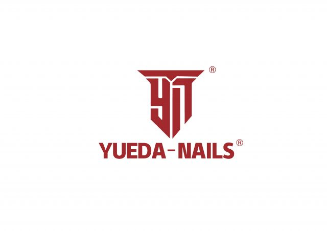
Компания Yueda Nails была основана в 2003 году. Благодаря многолетнему опыту, сегодня мы располагаем тремя производственными площадками, на которых выпускаются все виды гвозди, cкобы, гвоздей для нейлеров, а…
Shangqiu Acer Measuring Tools Co., Ltd. в основном продает собственный бренд HENGI: рулетки, канцелярские ножи и лезвия для них. Они охватывают отрасли: хозяйственные инструменты, строительный декор, канцелярские товары…
SHANGQIU EUROPUS MEASURE TOOLS CO.,LTD.— это производитель измерительного инструмента, объединяющий разработки, проектирование, производство и продажи. Сфера её деятельности охватывает производство и продажу чертёжных, вычислительных и измерительных приборов (таких…
Наша компания специализируется на производстве различных режущих инструментов, таких как алмазные инструменты, пильные полотна с твердосплавными напайками, сверла из быстрорежущей стали, деревообрабатывающие инструменты, инструменты для каменной кладки, полировальные…
Компания основана в Хэнане в 2010 году, выпускает рулетки, отвертки и другие ручные инструменты. Завод площадью 25 000 кв. м сочетает разработки, производство и продажи. Имеем полное производственное…
Компания Shangqiu Mirable Tools Co., Ltd. является производителем рулеток, угольников и уровней. Обладая более чем 30-летним опытом производства, мы экспортируем продукцию в более чем 20 стран; мы предлагаем…
Диски «Король стекла» предназначены для обработки стекла, бутылок и керамики, режут остро без сколов краев.Многофункциональные композитные диски подходят для резки тонких железных листов, стальных плит, профнастила, композитных панелей…
Исследования и разработки, производство и продажа паяных алмазных отрезных дисков и алмазных коронок. OEM и ODM приветствуются. Алмазная продукция Soliboss застрахована Pacific Insurance Company
Компания Shaodong Yuanyang Hardware Tools Machinery Co., Ltd. — это давно существующее предприятие, специализирующееся на производстве и внешней торговле ручным инструментом, основанное в 1992 году. Мы постоянно внедряем…
Наша компания, основанная в 1991 году, является одним из ведущих производителей степлеров и гвоздей в Китае и специализируется на производстве высококачественных промышленных степлеров. Имея собственную лабораторию и оборудование…
Фабрика по производству ногтей «Шаосин Хуаяо» — это специализированное предприятие, объединяющее исследования и разработки, производство, продажи, а также импорт и экспорт продукции для ногтей. Благодаря многолетнему опыту в…
Мы — профессиональный китайский производитель, специализирующийся на выпуске корончатых пил и алмазных инструментов самых разных типов.
Наша компания предлагает широкий ассортимент продукции с полным набором технических характеристик и по разумным ценам, обеспечивая своевременную доставку. Мы также изготавливаем продукцию по индивидуальным заказам в соответствии с…
Компания OSCAL, движимая девизом «Только смелые», стремится сделать высокопроизводительные, передовые технологии доступными для всех, чтобы люди могли вести более разумный и технологичный образ жизни. Благодаря разнообразному ассортименту —…
Мы являемся профессиональным производителем ручного инструмента и инструментов для обслуживания автомобилей уже более 30 лет.
SHIJIAZHUANG FULL STAR METAL PRODUCT CO.,LTD Основанная в 2014 году, компания расположена в округе Удзи, городе Шицзячжуан, провинции Хэбэй. Наша компания в основном производит металлическую продукцию для строительства,…
Компания Shijiazhuang Jifeng Diamond Tools Co., Ltd., основанная в июне 2004 года в провинции Хэбэй, является национальным высокотехнологичным предприятием, специализирующимся на НИОКР, производстве и продаже алмазного инструмента. С…
SHIJIAZHUANG KAMLION DIAMOND TOOLS CO., LTD — профессиональный производитель алмазного инструмента в Китае. Мы выпускаем диски для керамики, камня, штроборезов и дорожных пил, а также алмазные шлифовальные чашки.…
Подразделение национального стандарта, компания с хорошей репутацией AAA, известный экспортный бренд провинции Чжэцзян, основанная в 1978 году, с общей площадью 60 000 м². Имеет 10 основных серий и…

SHTOK. ─ профессиональный электромонтажный инструмент. SHTOK. создан на основе идеи сделать качественный профессиональный электромонтажный инструмент доступным для российского потребителя. Мы стремимся, чтобы инструмент SHTOK. всегда своевременно был под…
Мы специализируемся на наборах ручных инструментов и головок, наборах электроинструментов и принадлежностей, инструментах для ремонта и технического обслуживания автомобилей. Более чем за годы работы мы обладаем опытом поставок…
Tianhu — ведущий китайский производитель металлокомпонентов, режущих и электроинструментов. Специализация: сменные твердосплавные, монолитные твердосплавные, быстрорежущие инструменты и оснастка. Более 105 патентов, 33 национальных стандарта. Продукция для строительства, автосервиса…
SIHUI CITY HUATONG SEIKO MANUFACTURING CO., LTD. — современное высокотехнологичное предприятие, специализирующееся на производстве искробезопасного инструмента, изолированного инструмента, инструмента из нержавеющей стали и других слесарно-монтажных изделий. Компания владеет…

Solido Hand Tools — независимый профессионально управляемый производственный бренд, специализирующийся на выпуске высококачественного ручного инструмента для промышленного, автомобильного и инженерно-технического применения. Обладая многолетним опытом в области ковки и…
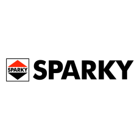
Электроинструменты «SPARKY» – это традиционное европейское качество с 60-летним опытом разработки и производства электроинструмента. История бренда началась с города Ловеч (Болгария), где было организовано первое производство полного цикла…

Компания STIMUL - производитель качественного навесного инструмента для мотоблоков. С 2019 года мы расширяем номенклатуру выпускаемых изделий и географию поставок.
Китайская национальная машиностроительная корпорация является одним из важнейших государственным системообразующим предприятием, находящимся под непосредственным управлением правительства КНР. Компания SINOMACH создана на базе Первого Министерства машиностроения, образованного 7 августа…
SUN.B. INTERNATIONAL, основанная в 2000 году, стала одним из ведущих международных производителей, специализирующихся на выпуске инструментов для ювелирного дела, часового производства и высокоточных инженерных работ, а также инструментов,…

Под брендом SUNREKA продается одна из лучших по дизайну и качеству автономная техника, которая необходима для комфортной жизни вне города, в том числе: генераторы; мотопомпы, снегоуборщики, садовые косилки,…
Компания Suqian Meite Bags Co., Ltd. расположена по адресу: ул. Юхан, 8, зона экономического развития, уезд Шуян, город Суцянь, провинция Цзянсу, Китай, 223600. Компания прошла сертификацию системы качества…
Мы специализируемся на производстве высококачественных плоскогубцев, гаечных ключей, молотков, топоров. Мы также работаем с сотнями надежных заводов, поставляя долоты, пилы, режущие диски и стальные щетки. Мы всегда предлагаем…
Китайский производитель наборов инструментов для авторемонта, бытового и домашнего использования. Предоставляем услуги OEM и ODM, а также нанимаем агентов за рубежом. 16-летний опыт работы в сфере производства ручных…
Компания SW ADHESIVE TAPE CO., LTD имеет более 20 лет опыта работы в сфере клеящих лент. Мы производим разнообразную продукцию из клеящих лент в Китае и экспортируем её…
Компания Taian Zhongrui Import and Export Co., Ltd. является специализированным производителем шариков из углеродистой стали и шариков для подшипников. Продукция компании включает различные металлические шарики из разных материалов…
Коробка машины была основана в 2010 году Компания специализируется на производстве серии продуктов, таких как машины для очистки под высоким давлением, электродвигатели, генераторы и садовая техника. Это технологическое…
BOYU GROUP - это крупномасштабная корпоративная группа, которая специализируется и производит различные виды компрессоров, сварочных аппаратов, двигателей и водяных насосов. Он был основан в 1988 году. Штаб-квартира находится…
ООО «Чуньфэн Машинери» города Тайчжоу ведёт свою историю с 1992 года. Первоначально это была пластиковая фабрика «Минфэн» города Тайчжоу, в 2003 году была основана компания «Хуада Опрыскиватели и…
Тайчжоуская компания пластиковых изделий «Hangyu» (Taizhou City Hangyu Plastic Co., Ltd.) является профессиональным OEM/ODM поставщиком моек высокого давления, опрыскивателей, генераторов и водяных насосов. Компания имеет сертификаты ISO9001 и…
TAIZHOU FEIDA MACHINE TOOL CO., LTD. была основана в 1990 году. Our 30,000 ㎡ фабрика имеет 300 сотрудников и 15+ старших инженеров, разрабатывающих сварщики, плазменные резки и связанные…
Компания Тайчжоу Гуанцин Пластик Индастри Ко., Лтд. расположена в развитом приморском городе Тайчжоу провинции Чжэцзян. Основная продукция – ручные распылители, курковые распылители, напорные распылители и электрические распылители. Мы…
Мы являемся профессиональным заводом по производству воздушных насосов, боковых вентиляторов, двигателей и водяных насосов. Мы принимаем OEM и ODM.
Импортно-экспортная компания, которая занимается всеми видами водяного насоса, воздушного компрессора и распылительной пушки.
Taizhou Hawking Garden Machinery Co.ltd. Это национальное высокотехнологичное предприятие, объединяющее в себе исследования, разработку, производство и продажу различных садовых инструментов, таких как бензопила, пылесос-духопровод, газонокосилка и шреддер. У…
Высокоэффективный суперклей Henco Brand Это универсальный высокопрочный клей, разработанный на основе многолетнего опыта производства и исследований, а также передовых производственных технологий. Его уникальные свойства включают сверхпрочное соединение, чрезвычайно…
Taizhou Kaifeng Plastic Steel Co., Ltd. основана в 2001 году, производит бытовые и промышленные пластиковые изделия. Продукция: распылители, сельхозтехника, садовая техника, мусорные баки, пластиковые скамейки, бочки. Серия распылителей…
Тайчжоу kesuo является современным предприятием, интегрирующим независимые исследования, разработки, производство и импорт и экспорт самостоятельной поддержки, завод, расположенный в Сяньцзянь, Тайчжоу, город, охватывает общую площадь 10000 квадратных метров.…
Фабрика Early professional, специализирующаяся на производстве, в основном производит различные пневматические инструменты, включая ударные гайковерты, Штамповочные машины, храповые ключи, угловые шлифовальные машины, орбитальные шлифовальные машины произвольного действия, молотки.
MDB — ведущий производитель клеев с 2000 года. Решения для строительства, мебели, деревообработки, кожи и упаковки. Сертификаты: National High-tech, SRDI, ISO 9001, TfS-CI. Продукция протестирована SGS. Партнер Fortune…
Taizhou Meng'en Pneumatic Tools Co., Ltd. — торговый центр Taizhou Caishi Machinery на базе завода 80 000 кв.м. Пневматические фитинги и инструменты мировых стандартов. Ваш надежный партнер.
КОМПАНИЯ TAIZHOU MENGHUA MACHINERY CO., LTD. БЫЛА ОСНОВАНА В 1991 ГОДУ И РАСПОЛОЖЕНА В ТАЙЧЖОУ, КОТОРЫЙ ЯВЛЯЕТСЯ ПРИГОДНЫМ ДЛЯ ПЕРЕДВИЖЕНИЯ ГОРОДОМ. ТРАНСПОРТНЫЕ СЕТИ ТАЙЧЖОУ РАСПРОСТРАНЯЮТСЯ ПО ВСЕМУ МИРУ.…
набор торцевых ключей, набор метчиков и плашек, плоскогубцы, штангенциркуль
Компания Order Machinery — ведущий производитель бытовых, садовых и сельскохозяйственных опрыскивателей. Будучи национальным высокотехнологичным предприятием, мы специализируемся на исследованиях и разработках, производстве и продажах. Наша продукция включает в…
Наша компания представляет собой интегрированное промышленно-торговое предприятие, специализирующееся на производстве различных видов опрыскивателей, электрических пенных опрыскивателей и других изделий из пластмассы бытового назначения.
Компания производит электроинструменты для сада и профессионального строительства. У компании есть производственный цех площадью 5000 м², инструментальный цех и собственная моторная мастерская, что позволяет выпускать до 700 000…
Taizhou Shengrui Trading Co., Ltd. находится в тайчжоу, специализируется на электроинструментах, таких как электрические молотки, электрические пики, литий-ионные сверла и все виды запасных частей. Наши продукты хорошо продаются…
Компания Taizhou Tianqi Metal Products Co., Ltd, основанная в 2017 году, является авторитетным производителем, специализирующимся на выпуске высококачественных газовых горелок. Приверженность компании качеству подтверждается сертификатом CE и двумя…
Компания Taizhou Veer Tools Co., Ltd. специализируется на производстве отрезных кругов, шлифовальных кругов, лепестковых дисков и другой продукции. Компания была основана в 2010 году. Более десяти лет сотрудники…
Краткое введение КОМПАНИЯ ТАЙЖО У ВОЛЬФСОН ПАМП КО., ЛТД., основанная в 2016 году, является компанией, объединяющей исследования, разработки, производство и продажу. Вольфсон имеет более 200 сотрудников, площадь завода…
Основная деятельность — производство сварочных материалов, винтов, болтов, гаек и трансформаторов и т.д.
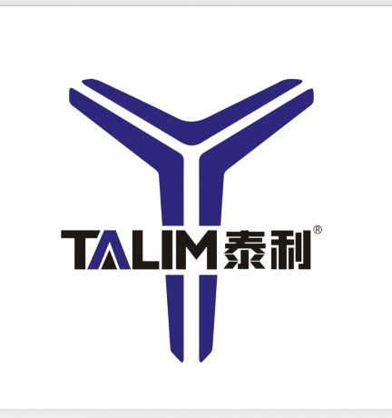
TALIM - Собственный бренд электроинструмента с полупрофессиональной линейкой , созданный с учетом потребностей современного рынка. Наше производство находиться в КНДР .
Таншаньск хан таку инструмент созда TangShan company limited, ег фабрик располож прекрасн боха хамад, адрес TangShan LuanNa County DaoKou Town гамп пут сонг, дорожн очен. Основные продукты: стальные…
Компания Tangshan Sankuan Tools была основана в 2001 году с уставным капиталом в 4 миллиона юаней. Площадь предприятия составляет 2,33 гектара, на нем работает 240 сотрудников. Мы располагаем…
Компания TATA AGRO MOTO- это надежный поставщик запчастей к бензо и мототехнике, в частности: запчасти на мотоблоки бензиновые и дизельные с воздушным и водяным охлаждением, запчасти к мини-…

Производитель и прямой поставщик силовой техники, бензиновых, инверторных, дизельных генераторов от 2,5кВт и дизельных генераторных установок до 1МВт мощности. Фабрика основана в 2004 году и специализируется на исследованиях,…

ООО «Трейд Групп» — российская компания с огромным опытом работы на рынке электроинструмента. Мы стали эксклюзивным импортером TEH в России, потому что увидели в этом бренде сочетание реального…
КОМПАНИЯ TIANCHANG FASTENER SYSTEM CO., LTD была основана в 2019 году. Стремясь к более высокому качеству, Tianchang Fastener внедрила современное оборудование и передовые технологии, и в настоящее время…
Кольца Хог, скобы для ограждений, специальные скобы, ручные скобы, скобы 53, скобы E40, кольца Омега, картонные скобы, а также другие виды скоб из различных материалов для разных сфер…
Tianjin Kangsheng Fasteners делает шланговые зажимы,трубные зажимы и промышленные крепежи.Завод имеет современные линии,лаборатории,научно-исследовательские системы и строгий контроль качества.Мы поставляем различные клеммы для автомобилей,машин и трубопроводов,с индивидуальным обслуживанием и…
ООО «Тяньцзинь Синьин Фотоэлектрические приборы» основано в 2010 году. Компанией управляют опытные профессиональные инженеры, много лет работающие в отрасли фотоэлектрических приборов. За годы упорной работы компания достигла быстрого…

TIGER Abrasive - завод абразивного инструмента TIGER CUT- твердосплавные борфрезы, сверла, корончатые сверла. TIGER Instrument- электроинструмент, сверлильные станки TIGER Abrasive - марка абразивных материалов для профессионалов, разработанная специально…
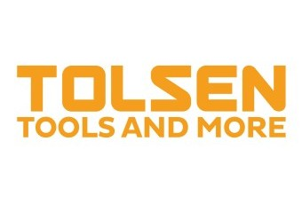
TOLSEN — международный бренд ручного и электроинструментов. Основан в 2010 году, штаб-квартира находится в Чжанцзяган (Сучжоу, КНР). Ассортимент TOLSEN включает в себя 4000 наименований продукции в 30 товарных…
Основная продукция: Алмазные инструменты, такие как буровые коронки, пильные диски, шлифовальные пластины. Сверлильные станки, настенные пилы, напольные шлифовальные машины. Основные области применения: . Сверление, резка и шлифовка для…
Sichuan Tranrich abrasives в основном занимается экспортом абразивов, таких как лепестковые диски, полосовые диски, велкро-диски, режущие диски, велкро-диски, пильные лезвия, металлические шаговые сверла. ..
TROTTER — профессиональный производитель абразивных материалов на гибкой основе. Площадь завода 76 040 м². У нас отлаженные производственные линии и строгая система контроля качества. Мы предлагаем OEM и…

С 2013 года компания Тулз Систем является эксклюзивным представителем мексиканского бренда Truper на российском рынке. Во всем мире – это один из основных производителей инструмента для строительства, сада…

VEBEX – надежный поставщик запчастей для инструмента с 2015 года Наша компания уже 10 лет специализируется на оптовых поставках запчастей для электро- и бензоинструмента по всей России. Мы…

Компания Venus Industrial Corporation — признанный игрок на мировом рынке ручного инструмента и один из ведущих производителей и экспортеров гаечных ключей, плоскогубцев и инструментов для обслуживания автомобилей. Помимо…

Компания Victor Forgings, основанная в 1954 году, — семейное предприятие и один из ведущих производителей и экспортёров профессионального ручного инструмента в Индии. Приверженность компании высоким стандартам качества и…

VILLARTEC – это бренд надежной садовой, лесной, сельскохозяйственной и строительной техники, созданный опытными лидерами рынка. Более 20 лет наша команда занималась импортом и дистрибуцией в РФ премиальной немецкой…

С 1992 года Vishal Tools & Forgings производит профессиональный ручной инструмент и является вертикально интегрированным производителем гаечных ключей и другой инструментальной продукции. Mech Choice Tools является неотъемлемой частью…
VOER (WOER) Group, основанная в 2010 году, специализируется на уборочном, лесном и строительном оборудовании. Завод 20 000 м², мощность 25 000+ единиц, 32 патента и сертификаты CE, ISO,…
PAIBO — профессиональный производитель, специализирующийся на садовых шлангах из ПВХ, разработанных для обеспечения долговечности, гибкости и надежной работы при поливе на открытом воздухе. Уделяя особое внимание контролю качества…
WEIHAI MAXPOWER ADVANCED TOOL CO. , имеющая 58-летнюю историю, производит более 20 000 видов инструментов и предоставляет услуги OEM для множества известных мировых брендов ручного инструмента. MAXPOWER хорошо…
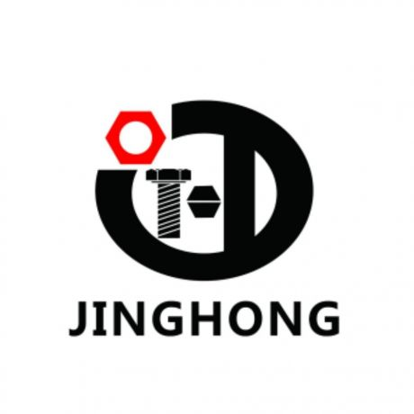
Jinghong Fasteners (Вэньчжоу), высокотехнологичное предприятие. Специализируемся на крепёжных изделиях по стандартам DIN/GB/ANSI и изготовлении нестандартных деталей на заказ. Имеем большой опыт работы на рынке России. Сертификат ISO TS16949,…
Мы являемся производственным предприятием по изготовлению кабельных стяжек с более чем 20‑летним опытом работы. Завод имеет сертификаты BSCI, ISO9001 и ISO14001. Мы используем исключительно 100‑процентный полиамид PA66 производства…
Компания Wenzhou Yichuan Tools Co., Ltd. была основана в 2003 году и расположена в промышленной зоне Цинцзян, Юэцин, Вэньчжоу, Чжэнцзян, Китай. Наш завод занимает площадь 3000 квадратных метров,…
Алмазные пильные диски с лазерной сваркой для строительных материалов, алмазные пильные диски для резки камня, керамики, металла, стекла. Алмазные коронки с лазерной сваркой и высокочастотной пайкой для бетона,…
Компания D-GINERA имеет 25 лет опыта изготовления высокоточных гальванических алмазных и CBN инструментов. Наш сертифицированный по ISO 9001 завод площадью 10 000 м² сотрудничает с дистрибьюторами Европы, Америки…
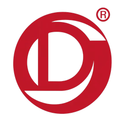
Компания WUXI DINGJIAN из города Уси, Китай, с производственной базой в Ляочэн, Шаньдунь, с 1988 года производит качественные металлические изделия, включая шайбы и штамповки. Обслуживает автомобильную и сельскохозяйственную…
Мы являемся комплексным производителем полиэстеровых лент, ременных стяжек с храповым механизмом и подъемных ременных строп. Изготавливаем ременные стяжки серии MCC, принимаем полную кастомизацию параметров ленты, защитных обшивок для…
Компания Wuxi Kebong Lifting Machinery Co.,Ltd находится в городе Дунган, Уси, провинция Цзянсу, Китай. Город Дунган славится своим промышленным прогрессом и легким транспортом по городам Цзянсу, а также…
Wuxi Synletek Precision Technology Co., Ltd. является профессиональным производителем динамометрических ключей, тестеров отверток и сопутствующих товаров. У нас есть команды по исследованиям и разработкам, продажам и производству, чтобы…
Специализация на производстве и продаже электроинструментов из чистой меди — как сетевых, так и аккумуляторных. Завод работает с 1998 года, площадь 65000 м², более 500 сотрудников. Ежедневный объем…
Wuyi Jinghe Tools Co., Ltd. Профессиональный производитель садовой техники с 17-летним опытом Базируясь в провинции Чжэцзян, Китай, мы поставляем высококачественное садовое оборудование по всему миру. Основной ассортимент: Бензопилы,…
ООО «Уйи Кэци Тулс» основана в 2006 году в Юнкане – известной столице аппаратного оборудования Китая. Уже двадцать лет компания специализируется на разработке, производстве и продаже абразивных и…
Основная продукция нашей компании включает в себя аккумуляторные литиевые электроинструменты, такие как аккумуляторные дрели-шуруповерты, ударные дрели, аккумуляторные отвертки, ударные гайковерты и т. д. Все изделия соответствуют национальным экспортным…
Компания Wuyi Xinxie Industry and Trade Co., Ltd. — это профессиональное предприятие, занимающееся исследованиями, разработкой, производством и продажей садовой техники. Головной офис расположен в китайском городе с термальными…
WUYUAN QIANGSHENG COMMERCIAL&TRADING CO.,LTDбыл основан в 1993 году, специализируясь на производстве ручных пил, садовых пил и японских пил; Существует три серии продукции, включая кирпичные ножи, штукатурные ножи, клейковые…
Кольцевые сверла из быстрорежущей стали, твердосплавные корончатые сверла, сверла, метчики и плашки, концевые фрезы, развертки, твердосплавные борфрезы, зенковки, ступенчатые сверла, резцы, буры SDS‑plus
Longge Auto Tools специализируется на производстве автомобильных ремонтных и слесарных инструментов. Основная продукция: краны для двигателей, трансмиссионные домкраты, пневмоинструменты, подушки-домкраты, стойки, рампы, подкатные домкраты, подъёмники для гипсокартона, съёмники…
инструмент для ремонта автомобилей,гаражный кран,насос для дизтоплива / дизельный насос,накачка шин / компрессор для накачки автомобильных шин,инструментальная тележка,гаражный лежак / подкатной лежак для механика,поддон картера двигателя
Компания основана в 2006 году и является одним из крупных производителей изоляционных лент на территории провинции Хэбэй. Основная продукция включает ПВХ электроизоляционную ленту, ПВХ сигнально-предупредительную ленту, высоковольтную резиновую…
Xinlei — высокотехнологичное предприятие, объединяющее НИОКР, производство и продажи, предлагающее цифровые интеллектуальные решения аэродинамических систем для любых сценариев. Компания самостоятельно разрабатывает четыре линейки оборудования: поршневые воздушные компрессоры, винтовые…
Производим холоднокатаную и пружинную стальную ленту, делаем отжиг, резку, закалку и отпуск. Марки: C45, C50, C60, C67S, C75S, SK5, 65Mn, 75Cr1, 51CrV4, 60Si2Mn, 30CrMo, D6A, X32
Xuzhou Hengyuan Electrical Appliances Co., Ltd., основанная в 2000 году, занимает площадь 23 000 м², а общая площадь зданий составляет 32 000 м². Мы специализируемся на разработке, производстве…
Компания Xuzhou Juli Tools Making Co.Ltd. специализируется на производстве всех видов металлоизделий. Основанная в 1980-х годах, компания постепенно, благодаря упорной работе, сформировала выдающуюся репутацию в инструментальной отрасли. Благодаря…
ООО «Сюйчжоу Чжуоюань Инструменты» — профессиональный производитель ручных зажимных и режущих инструментов. Наш ассортимент включает зажимные клещи, трубные ключи, струбцины C/F/угловые, резчики болтов, проволочные клещи и другие промышленные…
Мы являемся профессиональным производителем абразивного и алмазного инструмента, компания основана в сентябре 1994 года. Наша продукция экспортируется во многие страны, включая США, европейские государства, Японию, Корею, Ближний Восток…
Компания Yangzhou Cheng Rui Bristle Co., Ltd., основанная в 1992 году, более 30 лет производит высококачественные щетки и предоставляет качественное обслуживание. У нас строгий контроль качества: каждая партия…
ООО,Янчжоу Цюнхуа инструменты, основанная в 1995 году, специализируется на производстве различных бочек для масла, шприцев для смазки, масляных насосов и других металлических инструментов.Компания завоевала почетные звания продукции известных…

ООО "ШИП" - официальный дистрибьютор бренда YATO, VOREL, STHOR, FLO, SENSH. На рынке более 20 лет, зарекомендовали себя как надежные и ответственные поставщики. В нашем ассортименте широкий перечень…
Микрокультиватор приводится в движение небольшим двигателем, имеет малый вес и простую конструкцию. Он широко используется на различных типах местности и отличается гибкостью в эксплуатации. Он решает множество проблем…
Компания Yinrun Tools Co., Ltd. была основана в 1994 году. Это современное предприятие, объединяющее производство и внешнеторговую деятельность, расположенное в городе Даньян провинции Цзянсу. Компания специализируется на производстве:…
Бади материал :AS; тест зазвучал :AC100-250V; пакетный материал :Spu11; срок службы :500V 30000times
Основанная в 2004 году рядом с портами Циндао и Ричжао, мы являемся ведущим заводом бархата для резки стек для роликов краски. Интегрирован с спиндингом, тканием и краской. 250…
О компании и философия Компания Yongkang Yulin Industry and Trade Co., Ltd., основанная в 2003 году и расположенная в городе Юнкан провинции Чжэцзян – известной как «Китайская столица…
Компания Юйбан Ленты – профессиональный производитель клеевых лент, объединяющий разработку, производство и реализацию разнообразной клеевой продукции. Основное направление деятельности включает малярную ленту, армированную ленту, нано‑двустороннюю ленту, упаковочную скотч…
Основанная в 2002 году, Yiwu Jinluo International Trade Co., Ltd. является надежным партнером в глобальном секторе профессиональных инструментов. Мы предлагаем более 5000 продуктов, включая электроинструменты, ручные инструменты и…
Йиянг Вонстар Материалы Строительные, ООО была основана в 2011 году и работает уже 15 лет. Компания специализируется на строительных клеях, таких как пенообразователи, стеклоизоляционные герметики и трубные клеи,…
МЫ ПРОИЗВОДИМ АБРАЗИВЫ ARROWKING АБРАЗИВНЫЕ В YONGKANG, ZHEJIANG, CHINA. ИННОВАЦИЯ - НАШ ЛУЧШИЙ ПРОДУКТ. МЫ БОЛЕЕ 30 ЛЕТ ЧЕСТНОСТИ. МЫ ОСВАИВАЕМ САМОЕ СОВРЕМЕННОЕ ОБОРУДОВАНИЕ, СТРОГИЙ ВЫБОР СРЕДСТВ, А…
YongKang BeiLuo Tools Co. Ltd. является ведущим производителем, специализирующимся на высококачественном оборудовании для садоводства. Обладая 18 - летним опытом работы в отрасли, мы стремимся предлагать инновационные и долговременные…
Компания Yongkang Buchou Industry & Trade Co., Ltd. была основана в 2016 году. Мы являемся профессиональным производителем электроинструментов, специализирующимся на исследованиях и разработках, проектировании, производстве и продаже электроинструментов.
Yongkang Dege Tools Co., Ltd. специализируется на производстве, разработке различных типов бензопил, газонокосилок, буровых, насосов, зеленых изгородей, микропахотных машин и других садовых машин, прошел государственную сертификацию ISO -…
Мы являемся профессиональным производителем катушек для шлангов с более чем 10-летним опытом работы. Мы занимаемся исключительно производством катушек для шлангов. Площадь завода составляет 10 000 м², а штат…
Юнкан Хэбан Инструменты, ООО была основана в октябре 2017 года. Мы являемся профессиональным производителем, занимающимся производством и экспортом электроинструментов. За годы работы бренд компании ARGES продолжает развиваться и…
Yongkang Jingke, Чжэцзян, Китай. Уже семь лет мы производим литиевые аккумуляторные и электроинструменты. Ассортимент продукции: дрели, перфораторы, гайковерты, угловые шлифмашины для бытового и строительного использования. Предоставляем услуги OEM…
MINRUI является профессиональным производителем аккумуляторных инструментов.Такие как аккумуляторная дрель, аккумуляторная ударная дрель, аккумуляторный ударный гайковерт, аккумуляторная угловая шлифовальная машина, аккумуляторный молоток, аккумуляторная циркулярная пила,аккумуляторная лобзик
Завод основан в 2013 г., находится в провинции Чжэцзян (Китай). Производим и продаем электроинструменты, скобяные изделия, сельхозтехнику, металлоинструмент и комплектующие, предлагаем надежные решения благодаря профессиональному производству.
Компания "Юнкан Цзюнэнфа Инструменты" Основанная в марте 2024 года, компания расположена в промышленной зоне Сишань города Сиши, южного уезда Юнкан, провинции Чжэцзян, известного центра распределения строительных материалов в…
Компания Kaibang Tools Co., Ltd. расположена в городе Юнкан, провинция Чжэцзян, известном как столица инструментальной промышленности Китая. Компания специализируется на производстве алмазных буровых установок и магнитных буровых установок.…
Фабрика Yongkang kunyu, основанная в 2014 году, расположена в Юнкане, столице оборудования, провинция Чжэцзян, занимается производством садовых инструментов, таких как цепная пила, кусторез, запасные части и так далее.…
Они широко используются в отделке домов, промышленном производстве, строительстве, ландшафтном дизайне, ландшафтной инженерии, сельскохозяйственном производстве, коммунальном обслуживании и других областях..
Компания Ongkang LingShan Electric Machinery Co., Ltd., расположенная в провинции Чжэцзян, городе Юнкан, известном как «капитал оборудования Китая», предлагает отличный доступ к аэропортам Иу и Ханчжоу. Мы специализируемся…
Наша фабрика, основанная в 1998 году, расположена в городе Юнкан, столице производства оборудования в Китае. Это внешнеторговое предприятие, специализирующееся на производстве выключателей для электроинструментов, станков и оборудования.
Компания YONGKANG NANTIAN INDUSTRY AND TRADE CO.,LTD — крупный производитель садового инструмента, основанный в 2010 году, профессионально объединяющий разработку, производство и продажи.
Компания Yongkang Niuniu Plastic Products Co., Ltd., расположенная в городе Юнкан, провинция Цзиньхуа, специализируется на производстве настенных моек высокого давления. На производственной площадке площадью 4000 квадратных метров мы…
Zhibiao Abrasives: Точная инженерия с 1998 года. Расположенная в 20 минутах от станции скоростного поезда Юнкан Юг, наша новая фабрика 2025 года использует полную автоматизацию — от смесительных…
Компания Yong Kang Regal Tools Co Ltd. — это иностранное предприятие, специализирующееся на производстве и экспорте садового инструмента. Она стала экспортным предприятием, выпускающим продукцию собственного производства, с годовым…
Компания Yongkang Ruining Tools Co., Ltd. — профессиональный производитель с более чем 20-летним опытом в отрасли ручного инструмента. Мы специализируемся на выпуске высококачественных столярных стамесок, ручных пил, полировальных…
Компания Yongkang Shengyuan Import&Export Co., Ltd. является независимым подразделением внешней торговли компании Yongkang Zeqian Industry and Trade Co., Ltd., занимающим площадь 10000 м², насчитывающим 50 сотрудников и производящим…
Компания является профессиональным производителем металлических изделий, таких как тележки для багажа, складные тележки, универсальные ручные тележки, складные тележки для багажа из алюминиевого сплава и других аналогичных товаров.
Добро пожаловать в SHINING TOOLS! Мы семейное предприятие с 1993 года, два поколения занимаются производством ручных пил. Наша продукция поставляется в более 100 стран, преимущественно в Великобританию, Россию…
Компания Yongkang Shuaibiao Tools Co., Ltd. — профессиональный производитель инструментов для укладки плитки и поставщик инструментов для мощения в Китае, а также надежный производитель решений для мощения. Компания…
Мы представляем различные пылесосы, такие как сухо-мокрые пылесосы, промышленные пылесосы и бытовые пылесосы.
Мы специализируемся на производстве и разработке профессионального оборудования для изготовления пильных полотен, а также производим пильные полотна из твердосплавных материалов (TCT) и полотна для кусторезов. Наша компания является…
Компания основана в 2012 году и специализируется на производстве многоцелевых алюминиевых лестниц, бытовых лестниц, телескопических лестниц, рабочих платформ и строительных лесов-лестниц. Имея более девяти лет производственного опыта, современное…
Основанная в 2010 году, наша компания является профессиональным производителем, специализирующимся на катушках для шлангов. Наша основная продукция включает в себя ручные и автоматические выдвижные катушки для шлангов высокого…
Наша компания из Yongkang, столицы электрических инструментов в провинции Чжэцзян. Мы имеем более 20-летнюю историю в производстве электрических инструментов и специализируемся на производстве угловых шлифовок, шлифовых машин и…
бытовые пылесосы,шланговые барабаны,водяные пистолеты
Компания «Yongkang Yuhaolang Industry and Trade Co.,Ltd» является профессиональным производителем высокодавительных мойщиков, автомобильных пылесосов и насосов для шин в Китае. Специализируется на разработке, дизайне, производстве и продаже продукции.…
Наша компания производит напильники для цепных пил, ручные и электрические точилки для цепей, а также другие аксессуары для цепных пил. Основная продукция компании экспортируется с собственного завода, а…
Компания Yongkang Xieheng Industry & Commerce Co., Ltd. Основана в 1987 году Производство автосервисного оборудования и небольших строительных машин. С многолетним опытом, был создан широкий и профессиональный ассортимент…
Разрабатываем и производим литиевый садовый инструмент: пилы, кусторезы, триммеры, газонокосилки, культиваторы, снегоуборщики, роботы-косилки, секаторы, мойки. Цель — быть «Экспертом по скрытой динамике» и «Партнёром по разработке» для мировых…
Youli электрические и машины Co., Ltd является одним из самых профессиональных производителей для сварки машины, плазменного резача, зарядного устройства батареи, и водных насосов, которые имеют 200 серий и…
Мы делаем резачный нож, отвертку и запасное лезвие. В нашей компании есть 3 филиала, 220 сотрудников и занимаемая площадь составляет 32 000 квадратных метров. Разработанные с эргономическим дизайном…
Завод по производству оборудования и пластмасс в округе Ючэн Шуанъянь, расположенный в промышленной зоне города Шаоган, уезд Юйчэн, является производственным предприятием, специализирующимся на производстве художественных ножей, лезвий и…
Компания с ограниченной ответственностью «Тяньли измерительные инструменты» уезда Ючэн основана в 2006 году, площадь её территории составляет 20 000 квадратных метров. Предприятие специализируется на производстве и разработке стальных…
Наша компания производит различные пилы, паяные сплавы пилы и аппаратные принадлежности. Мы сотрудничаем с известными отечественными предприятиями, имеем более 300 дистрибьюторов и экспортную продукцию.Мы получили сертификацию ISO9000,прошли национальное…
Yuhuan Shunshida Intelligent Electromechanical Co., Ltd.является компанией, специализирующейся на производстве газовых сварочных факелов. Наша компания является OEM для более чем 50 российских брендов, а также ведем счет сбора…
Компания Zhejiang Zhongshi Tools Co., Ltd. была основана в 2009 году и является фабрикой с 16-летней историей. Мы специализируемся на производстве алмазного инструмента для полировки, резки или сверления…
Yuyao Jiahua Tools Co., Ltd была основана в 2001 году, является профессиональным производителем коробки для инструментов, наш завод расположен в быстром развитии и транспортировке удобный промышленный парк Yuyao…
Наша компания профессионально производит широкий выбор пневматических шлангов :PU шланг,NY шланг, катушка шланг, косичка шланг, гибридный воздушный шланг. Аксессуары для компрессоров, садовый шланг и так далее. Мы можем…
Компания специализируется на производстве серий трещоточных ключей, торцевых ключей и других разновидностей гаечных ключей. Годовой средний объём выпуска разнообразных ключей составляет 8 миллионов штук. Наше предприятие постепенно превращается…
Юйяо Личэнг Инструмент Компани Лтд является ограниченной компанией, которая объединяет производство, обработку, розничную и оптовую торговлю. Компания специализируется на производстве различных видов измерительных инструментов, таких как уровни, стальные…
Zhangjiagang TianHua Hardware в Китае, провинция Цзянсу. Tianhua - 20 лет превосходства, известный своими плоскогубцами, гаечными ключами, резцами и ручными инструментами. Ежемесячно производим 1,5 млн. плоскогубцев, 300 тыс.…
Компания Zhangzhou Huayi Electronics Co., Ltd. является профессиональным производителем мультиметров с более чем 20-летним опытом работы в данной отрасли. Наша годовая производственная мощность превышает 4 миллиона единиц продукции.…
профессиональный производитель мебельной и сантехнической фурнитуры. На предприятии осуществляем литье под давлением, штамповку, обработку на станках с ЧПУ, полировку, электрофорез и окраску. Основная продукция: ручки для шкафов, крючки,…
Обладая более чем 17-летним опытом экспорта, наша высококвалифицированная команда разработчиков предлагает комплексные решения для продукции. Свяжитесь с нами, чтобы ознакомиться с нашей новейшей коллекцией лестниц и тележек различных…
Наша компания была основана в 2000 году и обладает выдающимися возможностями инноваций и развития. У нас есть множество независимых патентов, и мы специализируемся на производстве деревообрабатывающего и садового…

ZHEJIANG ADAMAS CO., LTD является одним из крупнейших экспортеров широкого спектра ручных инструментов в Китае. Сегодня у нас также есть возможность получать платежи из России без каких-либо ограничений.
Специализируясь на двигателях переменного тока и бетоносмесителях, китайский производитель имеет более чем 25-летний опыт работы
Наша компания была основана в 1994 году и является профессиональным производителем, специализирующимся на алюминиевых уровнях, опорных стержнях и угольниках. Площадь завода составляет 30 000 квадратных метров, а численность…
С 2016 года Zhejiang Chamei Industry and Trade Co., Ltd. занимается профессиональным производством телевизионных подставок и их компонентов, руководствуясь выдающимся мастерством и гениальным духом. В отрасли, благодаря глубоким…
Компания Zhejiang Chuntao Technology Co., Ltd. была основана в 2003 году и более двадцати лет занимается разработкой и производством сельскохозяйственной техники для ландшафтного дизайна. Основная продукция компании включает…
25 лет истории завода, ориентируясь только на аккумуляторные электроинструменты, Полный диапазон 40+ 12 В
Компания Zhejiang Deshuo Technology Co., Ltd. была основана в 1999 году и расположена в городе Юнкан, провинция Чжэцзян, «столица» производства оборудования в Китае. Её площадь составляет 110 000…
Zhejiang Deyi New Materials (15+ лет) специализируется на прецизионной резке, тримминге кромок и производстве лент/рулонов из нержавеющей стали. Марки: 201, 304, 316L, 430. Резка на заказ: ширина 4,6–1500…
Dongya - это профессиональная фабрика воздушных инструментов, буровых битов, дырных пил, долотов с 1983 года. У нас есть сильная техническая команда, различное современное производственное оборудование, полные инструменты тестирования,…
Наша компания была основана в 1993 году и относится к числу первых частных акционерных предприятий Китая.Мы объединили производство, разработку и сбыт. Мы проектируем и изготавливаем множество автоматизированного оборудования…
Основанная в 1996 году, Zhejiang Greatbull Industry & Trade Co., Ltd. является профессиональным производителем с около 200 сотрудниками и площадью завода 50 000 м². Основная продукция включает кубирующие…
Компания Zhejiang Guanxin Cleaning Equipment Co., Ltd, основанная в 2014 году, является одним из самых профессиональных производителей очистителей высокого давления с литиевыми аккумуляторами в Китае. Компания сертифицирована по…
"Чжэцзян гуансин текнолосико". Ооо является 20 - летним инновационным производителем, который объединяет исследования и разработки, производство и продажу инструментов питания. Компания была основана в 2005 году в китайской…
Zhejiang Hangbo Power Tools Co., Ltd.is профессиональное предприятие электроинструментов С более чем 25 лет опыта в производстве электроинструментов, основными продуктами являются ротационные молоты, беспроводные молоты и разрушительные молоты.…
Компания Zhejiang Hangtao Industry and Trade Co., Ltd. — профессиональный производитель садово-парковой и лесохозяйственной техники. Компания была основана в 2016 году; в настоящее время штат насчитывает более 70…
Компания Zhejiang Haoda Tools Manufacture CO.,LTD, основанная в 2007 году и расположенная в городе Уйи, провинция Чжэцзян, Китай, является профессиональным производителем строительного электроинструмента. Компания Haoda Tools занимает более…
Компания ZHEJIANG HAUSYS GARDEN TOOLS CO., LTD расположена в уезде Уъи (провинция Чжэцзян, Китай). Мы специализируемся на производстве комплектующих для мотокос (триммерных головок) и нейлоновой лески, обладая многолетним…
Компания Zhejiang Helen Garden Co., Ltd. была основана в 2001 году с уставным капиталом в 30 миллионов юаней. Наша основная продукция: растягивающиеся садовые шланги, садовые шланги из ПВХ,…
Компания Zhejiang Hengbang Brush Industry Co., Ltd. имеет более чем 20-летний опыт производства различных видов проволочных щеток. Мы производим и управляем собственными силами, поэтому можем предложить клиентам лучшие…
С 2008 года наша команда разработчиков сосредоточилась на создании собственной продукции, включая ручные буровые установки для земляных работ, ледобуровые машины, ранцевые буровые установки для кернового бурения и буровые…
отрезная пила/торцовочная пила/пила по металлу
Компания Zhejiang Huarui Tools Co., Ltd специализируется на производстве садовых инструментов, уделяя особое внимание эксплуатационным характеристикам и производственным мощностям. Она расположена в зоне экономического развития в городе Уи,…
Компания Zhejiang Jiayang Machinery Co., Ltd., основанная в 2017 году, занимается производством, дистрибуцией и оптовой торговлей. Наша компания расположена в городе Вэньлин, в 11 км от аэропорта Луцяо…
Компания Zhejiang Jienuo Electrical Appliance Co., Ltd. была основана в 1994 году. Мы являемся профессиональным производителем бытовой техники, специализирующимся на разработке, проектировании, производстве и продаже пылесосов для сухой…
Компания CUMET Abrasive, основанная в 2003 году, является высокотехнологичным предприятием, предлагающим различные решения для финишной обработки поверхностей и резки материалов. Являясь профессиональным производителем отрезных, шлифовальных, лепестковых и циркулярных…
Специализированный завод по производству инструментов для прочистки канализации
Компания Zhejiang Jiuerjiu Chemical Co., Ltd., основанная в 1997 году и расположенная в химическом промышленном парке Нинбо, специализируется на производстве мгновенных клеев и других клеевых материалов. Производственная мощность…
Мы — профессиональный производитель абразивных материалов на полимерной связке с 30-летним опытом, специализирующийся на разработке и производстве отрезных дисков, шлифовальных кругов, проволочных щеток и лепестковых кругов. Мы строго…
Zhejiang Karui Machinery Co., Ltd. — надёжный партнёр по премиум-цепям, шинам и аксессуарам с 2018 года. Расположена в Чжэцзяне, поддерживается ROSHOW Group (002617), лидером топ-500 китайского машиностроения. С…
LECAN — ведущий китайский производитель сверл и долот SDS с более чем 30-летним опытом работы. Продукция Lecan изготавливается с особой тщательностью, чтобы сделать вашу работу быстрее и безопаснее.…
Компания iSunor была основана людьми, которые серьезно относятся к садоводству. Единственный способ понять, что действительно важно в садоводстве, — это получить от него удовольствие. Мы верим, что садоводство…
Zhejiang Luba Traffic Technology Co., Ltd. была основана в 2001 году. Мы специализируемся на производстве и разработке резиновых и пластиковых изделий в области транспортных средств. Наши основные продукты…
Компания Zhejiang MGS Level Industry Co., Ltd. основана в 2009 году, её главный офис расположен в городе Цзиньхуа провинции Чжэцзян. Специализация предприятия — разработка и производство строительных уровней,…
Эффективный и профессиональный пылесос для очистки,подходит как для домашнего, так и для промышленного использования.
Транспортная тележка, складная ручная тележка, верстак для самостоятельной сборки.
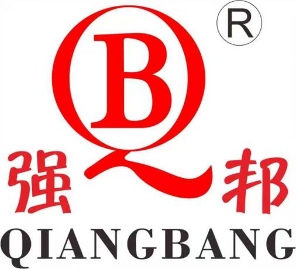
Компания Qiangbang Industry Co., Ltd занимает общую площадь 180 000 квадратных метров; штат предприятия насчитывает более 600 сотрудников, а годовая производственная мощность составляет 40 000 тонн. Компания специализируется…
• Компания Zhejiang Rongsheng Industrial Co., Ltd. была основана в 1994 году и является профессиональным производителем измерительных инструментов. • Основные линейки продукции: пузырьковый уровень/лазерный уровень/детектор стоек. • В…

Имея более 20 лет опыта, компания SELLTOP (KIMOFIX) — профессиональный производитель и поставщик нейлоновых, стальных и химических анкеров, поставляющий надежную продукцию для строительной отрасли и сектора бытового ремонта…
Наша продукция изготавливается из высококачественных материалов, таких как Cr-V 50BV30, и многие модели разработаны в соответствии со стандартами DIN, что обеспечивает долговечность и высокий крутящий момент.
Компания Zhejiang Snbon Electrical Co., Ltd., расположенная в уезде Уйи, городе Цзиньхуа, провинция Чжэцзян, Китай, является производителем специализированных пил и станков для резки. На сегодняшний день площадь компании…
западная армия, там завод пневматических инструментов. Запад производит пневматический ударный ключ, пневматический ключ с храповиком, пневматическую шлифовальную машину, пневматическую угловую шлифовальную машину, пневматическую шлифовальную машину, пневматическую дрель, пневматическую…
Компания Zhejiang TIANTI — ведущий производитель шлангов в Китае. Основанная в 1994 году, компания Zhejiang TIANTI Rubber & Plastic является семейным предприятием со штаб-квартирой в провинции Чжэцзян, Китай.…
Zhejiang Toolking Hardware &Tools Co., Ltd. является одним из профессиональных лидеров в области ручных инструментов и сокетных наборов в тайване, материковом китае и вьетнаме.
Компания Topwe Tools Manufacturing Co., Ltd. — это технологическое предприятие, специализирующееся на производстве бензопил, кусторезов, буровых установок и другой садовой сельскохозяйственной техники и принадлежностей. Производственная база компании занимает…
Это высокотехнологичное предприятие, специализирующееся на производстве цепей, направляющих шин и сопутствующих принадлежностей для аккумуляторных цепных пил, электрических цепных пил, бензопил и лесозаготовительных машин. Будучи лидером отрасли и первым…
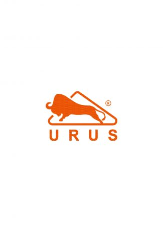
Наши сверла по дереву подходят для всех видов древесных плит, плотных плит, компрессионных плит. Оснащен плавным удалением стружки, более точным позиционированием и острым лезвием. Изготовлен из высококачественной углеродистой…
Профессиональный производитель гидравлических подъемных инструментов, таких как вертикальные домкраты и разъемные домкраты, расположенный в Хайянь, провинция Чжэцзян. Компания имеет сертификат качества ISO и собственные патенты на подъемное оборудование.…
Компания XIANFENG с 2005 года специализируется на производстве высококачественного автомобильного и гаражного инструмента, включая ремонтные лежаки (creepers), сервисные сиденья, магнитные системы хранения и профессиональные термокружки. Благодаря производственным базам…
Компания Чжэцзян Синда работает в отрасли уже 30 лет, мы специализируемся на универсальных ножах, картонных резаках, хобби-ножах, скребках и лезвиях. Более 90% продукции производится на наших собственных мощностях,…
Компания YAKEXI ежедневно производит 45 000, а в год — более 150 миллионов абразивных кругов. Мы выпускаем более 150 видов продукции и экспортируем ее в 50 стран мира.…
Компания Zhejiang Yaofeng Power Technology Co., Ltd. — китайский производитель. Мы в основном поставляем бензиновые генераторы, генераторы на сжиженном газе/природном газе, инверторные генераторы мощностью от 0,65 кВт до…
Zhejiang Yongan Deli Industry and Trade Co., Ltd (известная как DELI LADDER) является профессиональным производителем и поставщиком различных лестниц, включая телескопические лестницы, многоцелевые лестницы, удлинительные лестницы, бытовые лестницы,…
Компания Jindu Industrial & Commercial Co., Ltd. расположена в городе Юнкан провинции Чжэцзян, который известен как "Скобяная столица" Китая. С момента своего основания в 1995 году компания всегда…
Основанная в 2007 году, Zhejiang Youmay Industry Co Ltd. является профессиональным производителем лестниц, предоставляющим клиентам широкий ассортимент алюминиевые лестницы, стальные лестницы и виниловые лестницы. Вы можете охватить современный…
Компания Yusun, основанная в 2002 году, обладает 24-летним опытом производства высококачественных инструментов для деревообработки. Опираясь на успех на внутреннем рынке, Yusun расширяет свою деятельность по всему миру, поставляя…
Компания Zhejiang Zhenan electrical appliance co., ltd уже 41 год является ведущим производителем пылесосов, воздухоочистителей и т. д. Мы всегда стремимся «создавать ценность для клиентов» и обеспечивать «нулевой…
Мы являемся многопрофильным предприятием, объединяющим научно-исследовательскую деятельность, производство и продажи, и обладаем более чем 15-летним опытом экспорта в сфере производства обогревателей. У нас есть завод по производству обогревателей…
ZOMAX Garden Tools Компания ZOMAX была основана в 2005 году. Мы располагаем собственным современным заводом с полными производственными линиями и экспортируем продукцию в более чем 100 стран мира.…
Мы располагаем собственным стандартизированным производственным комплексом площадью 16 000 квадратных метров. На предприятии работает квалифицированный технический персонал и используется передовое автоматизированное оборудование, в том числе: станки для лазерной…
Zhengzhou Beili Diamond Tools Co., Ltd. Основанная в 1992 году, компания Beili является профессиональным производителем алмазных инструментов для резки бетона и шлифования полов.Наши инструменты широко известны своей остротой,…
Компания Kaijie (Zhengzhou) Abrasive Materials Co., Ltd., расположенная в городе Чжэнчжоу (провинция Хэнань, Китай), специализируется на продукции для шлифования и полировки. Руководствуясь принципами «клиент — прежде всего» и…
Компания Zhenjiang Baide Precision Tool Co., Ltd., стратегически расположенная в основной производственной зоне дельты реки Янцзы, использует преимущества близости к «золотой водной артерии» Янцзы и интегрированной сети автомагистралей…
Завод, специализирующийся на производстве алмазных пильных дисков и инструментов, изготовленных методом вакуумной пайки.На платформе электронной коммерции OZON мы предлагаем широкий ассортимент товаров с отличным соотношением цены и качества.
Мы профессионально производим полный спектр станков и режущих инструментов, метчиков, инструментов для ремонта резьбы. Специализируемся на прецизионных инструментах. Предлагаем инструменты, разработанные по индивидуальному заказу. Обладаем мощным техническим потенциалом…
Компания “JSD TOOLS” является профессиональным производителем промышленного инструмента. В основном мы производим режущий инструмент, измерительные приборы, принадлежности для станков, пневматический инструмент. Мы получили признание на рынке благодаря высокому…
КАЧЕСТВЕННЫЕ ИНСТРУМЕНТЫ ДЛЯ МАЛЯРНЫХ РАБОТ
ООО «Чжэнцзян Цзююте Пресижн Тулз» — профессиональный производитель и разработчик режущих инструментов. Мы изготавливаем пильные диски для деревообработки, диски для резки алюминия, диски для резки стали, пильные диски…
Основанный в 2013 году, Цзянсу Новый район Июаньский инструментальный завод является профессиональным производителем, занимающимся изготовлением лезвий для газонокосилок, карбидных круглых пильных лезвий и алмазных пильных лезвий. Расположенная в…
Присоска — это инструмент, используемый для крепления к стеклу или плитке, обеспечивающий захват, перемещение и фиксацию. Сверло — это режущий инструмент, используемый для сверления отверстий. Оно в основном…
Компания ZHENJIANG PENGTAI TOOLS CO., LTD. специализируется на разработке и производстве алмазных дисков, дисков с твердосплавными напайками, чашечных шлифовальных кругов, лепестковых кругов и отрезных дисков с высочайшими эксплуатационными…
Алмазный нож, лезвие TCT, Абразивный срез, Абразивные изделия, SDS plus сверла
Наша компания, расположенная в городе Чжэньцзян, провинция Цзянсу, является профессиональным производителем, специализирующимся на исследованиях, разработке, производстве и продаже сверл и сопутствующих инструментов. За годы работы мы накопили богатый…
Zhenjiang Suran Tools Co., Ltd. является профессиональным производителем и поставщиком алмазного инструмента, расположенным в городе Чжэньцзян, провинция Цзянсу, Китай. Компания была основана в 2017 году и специализируется на…
Наша компания специализируется на производстве различных режущих инструментов, таких как алмазные инструменты, пильные полотна с твердосплавными напайками, сверла из быстрорежущей стали, деревообрабатывающие инструменты, инструменты для каменной кладки, полировальные…
Компания специализируется на производстве прецизионного металлорежущего инструмента, спиральных сверл из быстрорежущей стали, ступенчатых сверл и т.д. Умный завод площадью 41 000 м² с годовой производственной мощностью 48 миллионов…
Мы специализируемся на производстве: алмазных пильных дисков, отрезных кругов, твердосплавных пильных дисков по дереву, вакуумно-паяных алмазных инструментов и всех видов полировальных подушек.
Насос для перекачки топлива с питанием от аккумулятора
1. Профессиональный производитель с 20‑летним опытом — Качество 2. Высокая производственная мощность — Стабильность 3. Лучшее качество при той же цене — Конкурентоспособность 4. Поддержка индивидуальных заказов —…
Компания Zhejiang Zhuji Jiushang Technology Co., Ltd. основана в 2009 году в г. Чжуцзи, известном центре сантехники Восточного Китая. Мы — профессиональный производитель с собственным R&D, специализирующийся на…
Мы являемся профессиональным производителем кольцевых сверл и магнитных сверлильных станков.

Розничные и оптовые продажи, сервисное сопровождение и поставка запчастей осуществляются в городах: Санкт-Петербург, Москва, Нижний Новгород, Ростов-на-Дону, Самара, Екатеринбург, Омск, и другие регионы России. Главная новинка 2026 года…

АксЭл — российская производственная группа, работающая с 1996 года. На собственной производственной площадке площадью 7100 м², включая швейный цех, мы выпускаем более 5000 товарных позиций, совместимых с десятками…
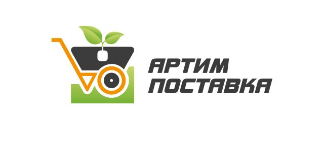

Компания АСТАРИ вот уже более 25 лет успешно занимается продажей и сервисным обслуживанием ведущих мировых производителей: 1. силовой продукции (генераторов и мотопомп), 2. садово-парковой техники, 3. моечно-уборочного оборудования,…

«Балчуг ВУД» специализируется на производстве деревянных лестниц и стремянок для ремонтных и отделочных работ. Собственные производственные площадки расположены в Костромской и Московской областях. Ассортимент включает модели высотой от…
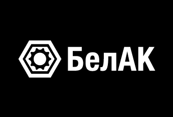
«БелАК» – один из крупнейших производителей профессионального автоинструмента, автоаксессуаров и запасных частей для автомобильного транспорта и спецтехники, как отечественного, так и импортного производства. Весь ассортимент компании «БелАК» отвечает…

АО «Белгородский абразивный завод имени А.И. Сафонова» - ведущее предприятие абразивной отрасли России. Лидер по объемам выпуска гибкого шлифовального инструмента среди отечественных производителей. Ассортимент продукции включает в себя…
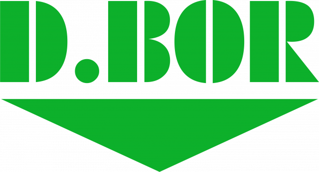
D.BOR – это: - 26 лет на российском рынке - Более 3000 наименований – буры, сверла, коронки, диски, биты, пилки, метчики и другой строительный инструмент - Клиенты во…

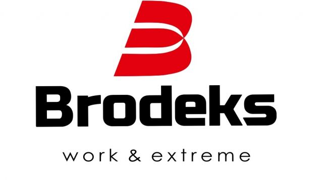

АССОРТИМЕНТ НАШЕЙ ПРОДУКЦИИ ВКЛЮЧАЕТ В СЕБЯ: ТАЧКИ СТРОИТЕЛЬНЫЕ, ЛОПАТЫ, БУРЫ САДОВЫЕ, КОСОВИЩЕ МЕТАЛЛИЧЕСКОЕ, ГРАБЛИ, ТАЗЫ, ВЕДРА, ВИЛЫ И Т. П.. ПО ЗИМЕ: СКРЕБКИ ДЛЯ ЛЬДА, 9 ВИДОВ ЛОПАТ,…

Компания «Вертекс Инструмент» является ведущим производителем ручного и электроинструмента, а также расходных материалов под торговыми марками:«VERTEXTOOLS» «REDCHILI» «LUFTER» , «DAST» и LUMIRA. Опираясь на многолетний опыт продаж в…


ВсеИнструменты.ру – онлайн-гипермаркет для профессионалов и бизнеса в сфере строительства, производства и услуг, предлагающий широкий ассортимент по выгодным ценам. Опора для тех, кто строит, производит и создает! Надежно.…
20 лет мы разрабатываем и выпускаем продукцию на основе поликарбоната и других термопластов, ориентируясь на самые строгие требования к качеству и эксплуатационным характеристикам. Наш ассортимент включает ударопрочные, термостойкие,…

GARVIN Tools — индийский производитель и экспортёр профессионального инструмента, предлагающий международным рынкам широкий ассортимент промышленного, прецизионного, станочного, ручного и столярного инструмента. Обладая многолетним опытом производства, GARVIN Tools сочетает…

ООО «GEVA-TRADE» является относительно молодой компанией на современном рынке инструментов и материалов для ремонтно-строительных работ, но успела завоевать доверие многочисленных покупателей, которые уже стали нашими постоянными клиентами. Наша…

ГЕТА — специализированный магазин оборудования для газовой сварки и резки: баллоны для технических газов, редукторы и регуляторы, сварочные и газовоздушные горелки, резаки, рукава БЕЛАРУСЬРЕЗИНОТЕХНИКА и сварочная химия.

GROVERS - сварочное оборудование, аксессуары и материалы высокого класса. Бренд GROVERS имеет опыт работы на рынке сварочной продукции более 20 лет. За это время он завоевал репутацию сильного…

FIXALL — международный промышленный бренд, специализирующийся на высококачественных материалах для строительства и ремонта. Продукция бренда решает широкий спектр профессиональных задач — от масштабных инфраструктурных проектов до частного ремонта.…

«Движок» – ежемесячный автомобильный журнал и интернет-портал для экспертов автомобильной индустрии и всех, кто интересуется автомобилями, запчастями для них и всем, что связано с послепродажным обслуживанием машин. В…

«Дело Техники» – российская марка ручного слесарного инструмента. С 1994 года наша компания обеспечивает слесарно-монтажным инструментом автомагазины, станции технического обслуживания, оптовые и снабженческие организации. Для розничных клиентов предусмотрена…
Основное направление ДЗВ Механика - реализация профессионального оборудования для мастерских: электроинструмент, пилы, форматно-раскроечные и кромкооблицовочные станки бренда JZY. Мы производим оборудование адаптированное для рынка Российской Федерации, обеспечивая официальную…
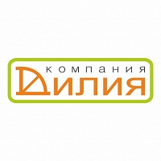
ООО «Компания «Дилия» существует на рынке металлоконструкций с 2007 года. Мы входим в группу компаний, занимающихся производством, комплектацией и продажей садовой техники и бензоинструмента торговых марок «Forza» и…
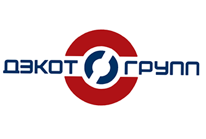
Мы занимаемся производством и прямыми поставками профессионального инструмента для предприятий промышленности. 1. Ресурс и надежность. Мы поставляем инструмент, рассчитанный на интенсивные промышленные нагрузки. Проверяем каждую партию товара перед…

Два направления — одна задача... Помогать участникам рынка лучше понимать происходящее в отрасли и быстрее находить партнёров, клиентов и решения для развития бизнеса. 1. Аналитика рынка. Продажи реальных…

Факты о компании: - более 400 магазинов участников партнёрской программы - свыше 14 млрд.рублей оборот магазинов-партнёров - 50 организованных конференций которые посетили более 2000 сотрудников инструментальных компаний -…

Всероссийский специализированный журнал посвященный металлургии и машиностроению, 20 безупречных лет на рынке промышленной информации, дипломант крупнейших промышленных выставок (более 700 выставок за период существования) и форумов, лидер на…

Компания CARBOLUX занимается изготовлением и оптовой реализацией лопат из поликарбоната, полипропилена и комплектующих к ним. Большой ассортимент позволяет подобрать лопаты под разные запросы. В нашей линейке 10 моделей…

Завод высотных конструкций с 2010 года производит широкий ассортимент высотных изделий для работ на высоте: • Одно-, двух- и трехсекционные алюминиевые лестницы; • Одно- и двухсторонние стремянки, •…

LINOLIT·CYBERVAC - российский производитель промышленных пылесосов с собственным заводом полного цикла. Разрабатываем и производим оборудование для сбора строительной и промышленной пыли, уборки производств и работы с профессиональным инструментом.…
IN SMART LOGISTICS — российская логистическая компания и собственная цифровая платформа для импорта грузов из Китая и Азии. Мы заменили «запрос — ждите расчёт три дня» на мгновенные…

Наша фирма является крупным производителем садово-огородного, хозяйственного и снегоуборочного инструмента уже более 10 лет. В ассортимент каталога входит более 2500 наименований. Отгрузки производятся только оптом по всей Российской…

Инструмент РТ – надежный партнер на рынке профессионального инструмента и оснастки. Компания работает с 2008 года, развивая направления дистрибуции, B2B и e-commerce. Мы представляем ведущие международные бренды и…

«ИНТЕРСКОЛ» — российский разработчик и производитель электроинструмента, садовой техники и средств малой механизации для бытового и профессионального применения. Компания развивает собственное производство в России, в том числе на…
- Производство морозостойких электрических шнуров для электроинструмента и силовой техники. - Продажа аккумуляторного. электро- и бензоинструмента. - Гарантийный и постгарантийный ремонт аккумуляторного и электроинструмента. - Заточка дисковых пил,…

IEK GROUP — ведущий российский производитель, предлагающий комплексные решения для всех отраслей промышленности, энергетики, ИТ-инфраструктуры, жилищного строительства. Высокотехнологичное производство на 11 площадках по всей стране позволяет компании оперативно…

Компания КанатПРО – российский производитель и оптовый поставщик канатов, веревок, фалов и шнуров. Наша миссия проста: обеспечить ваш бизнес не просто веревками и канатами, а идеальными решениями по…
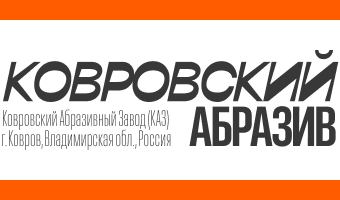
Ковровский Абразивный Завод — современное производство абразивного инструмента полного цикла на территории России. Наш каталог представляет продукцию как на гибкой основе, так и на бакелитовой связке.

Российская производственная компания «КОРОНА» Компания 'КОРОНА' основана в 1997 году. Ассортимент выпускаемой продукции ограничивался 20 моделями садово - паркового инвентаря. Модельный ряд постоянно расширялся и к 2002 году…

«Кратон» - российская торговая марка федерального масштаба, работаем на рынке с 1995 года. Сегмент DIY. В ассортименте более 3000 товарных позиций для широкого спектра задач: ручной электроинструмент, оснастка…
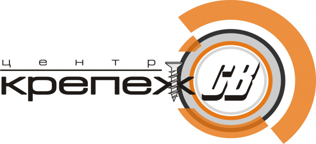
Центр «Крепеж СВ» занял нишу на рынке крепежа, монтажных технологий и строительной химии всерьез и надолго. Для нас не существует мелких клиентов и несерьезных заказов. Именно поэтому за…

Журнал-справочник «Крепёж, клеи, инструмент и...» издаётся с 2002 года и содержит информацию о выборе крепёжных изделий и систем, базовые справочные материалы, сведения о современных изделиях и монтажных технологиях…

О компании «КТК - Все для сварки» Мы — специализированный онлайн-гипермаркет, предлагающий полный спектр решений для сварочного производства. Наш ассортимент: • Сварочные аппараты и оборудование (MIG/MAG, TIG, MMA,…

Вспомните момент, когда строить и создавать казалось почти невозможным, когда мелкие детали казались огромными преградами. Сегодня, компания ЛАДЬЯ ААМ и наш собственный бренд Стройштуки предлагает вам широкий выбор…

ЛКЗ «Лаковар» — производитель лакокрасочных материалов из Санкт-Петербурга. Мы выпускаем ЛКМ на собственном производстве и контролируем качество на всех этапах — от рецептуры и подбора сырья до розлива…
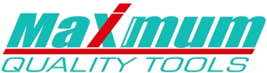
"LM company" представляет вам свой фирменный бренд "MAXIMUM Quality Tools". Это инструменты высокого качества по очень привлекательной цене! В нашем ассортименте более 2000 товаров. Всё что нужно в…

Компания «М-пластика» предлагает оптовые закупки хозяйственных товаров различного назначения, изготовленных из высококачественного пластика. С нашей помощью ваша жизнь станет проще. Наши товары незаменимы в повседневной жизни и органично…
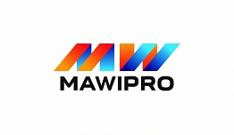
Оптово-производственная компания садово-огородного инвентаря, строительного инструмента и комплектующих. Качественная продукция, цены производителя, долгосрочное партнерство, ответственный подход к каждой сделке.

Уже более 25 лет имеем дело с малярным инструментом . Являюсь официальным представителем итальянской компании по производству валиков и кистей Fiorellini китайской Vinon tools, японской компании малярные ленты.…

Компания Мастер-Мир – российский производитель и поставщик отделочного строительного инструмента и товаров для дома с 2002 года. Миссия компания заключается в разработке, производстве и экспертной дистрибуции передового инструмента…

Master-Tool — торговая марка ООО «Мастер-Экспер». С 2008 года снабжаем торговые компании, инструментальные и интернет-магазины, производства со своего склада в Санкт-Петербурге. Ассортимент: — метчики и плашки: метрическая резьба…

Откройте мир надежных инструментов с брендами Merit-Link! CROWN — надежность с 1983 года. Входит в топ-5 производителей Китая, имеет 4 завода и R&D центры. Производим инструмент для Makita…

Группа компаний «МИДАСОТ», образована в 1992г. Специализируется в поставке газопламенного, электросварочного оборудования и расходных материалов BRIMA

Высокий уровень качества продукции "Мир Хомутов" подтверждает сертификация Компании на соответствие международным стандартам СМК требованиям ISO 9001:2015. "Мир Хомутов" победитель в Премиях “Бренд года в России” в номинации…

Наш бренд предлагает Вашему вниманию биты для шуруповерта, пильные и алмазные диски, коронки и сверла, садовый инвентарь в ассортименте. Качество материалов и использование передовых технологий, обеспечивает нашей продукции…
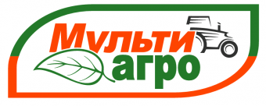
Производственная компания «Мультиагро». Мы производим на постоянной основе: - навесное оборудование для мотоблоков (плуги, окучники, грунтозацепы и др.) - прицепное оборудование (тележки для мотоблоков, адаптеры, картофелесажалки и картофелевыкапыватели…

МФК-Торг — более 15 лет на рынке промышленных комплектующих. Компания специализируется на оптовых поставках промышленных колёс и за годы работы сформировала широкий ассортимент продукции для предприятий по всей…
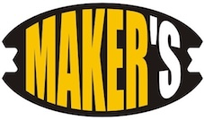

Штукатурно-малярный завод "Намерение" в г. Новосибирск. Более 1000 SKU собственного производства: валики, кисти, шпатели, СВП, ёмкости, миксеры, малярная лента и пр.
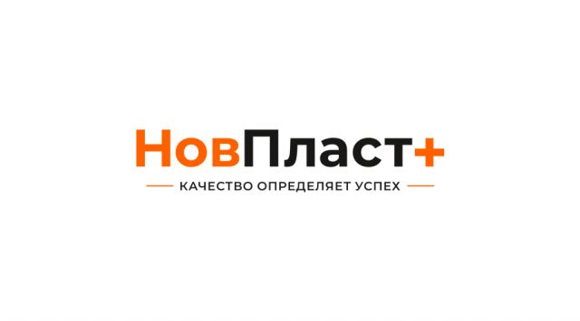
С 2006 года по сегодняшний день мы постоянно наращиваем наши производственные мощности, что позволило нам стать одними из ведущих производителей пластмассовых дюбелей в России. Наши производственные мощности позволяют…


ООО «Редиус 168» работает с 2000 года и производит газорегулирующее и газопламенное оборудование: редукторы и регуляторы расхода, резаки и горелки, предохранительные затворы и клапаны, баллонные вентили. Серийно выпускаем…
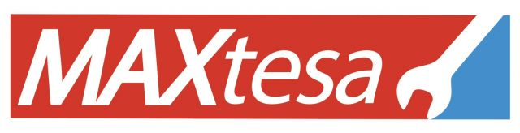
С 1998 года мы специализируемся на профессиональном силовом инструменте и стремимся быть надежным партнером для глобальных клиентов в сфере сварочного оборудования, электроинструментов и садовых инструментов. 28 лет опыта…
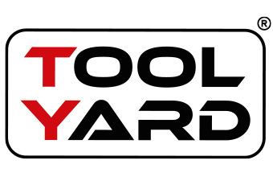
TOOLYARD — российская торговая марка, специализирующаяся на аккумуляторном и сетевом электроинструменте, садовой технике, а также сопутствующих аксессуарах и расходных материалах. Бренд ориентирован на рынок России и стран СНГ…
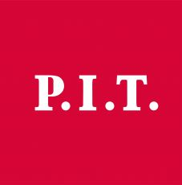
Компания ООО "Турбо-Тулс" - оптовая дистрибьюторская компания, основанная в 2009 г. Ассортиментный портфель компании включает в себя два бренда: Инструменты P.I.T. - китайский бренд электро-, бензоинструмента, садовой техники,…

Компания «Магнат-К» уже 20 лет успешно работает на рынке, занимая устойчивое положение и заслужив доверие тысяч клиентов. Мы являемся правообладателем популярных торговых марок «Маркус» и «MARSU», что позволяет…
ОптПромТорг крупная компания осуществляющая оптовые поставки продукции под собственными брендами «АкваПром», «ЭНЕРГОПРОМ», «ТЕХПРОМ», «LIRA» и т.д.. Каждый бренд является одним из лидеров на рынке, подтверждая высокое качество и…

PLANTIC – российский бренд садовых инструментов, признанный эксперт на рынке садовых инструментов, с развитой дистрибуцией на рынках РФ и части стран СНГ. Собственное производственная площадка компании располагается в…

Подшипник Волга — российская торгово-производственная компания, специализирующаяся на оптовых поставках подшипниковой продукции для всех отраслей промышленности, сельского хозяйства, автомобильного и транспортного сектора. Мы работаем напрямую с ведущими заводами…
Мы занимается производством ручного малярного инструмента c 1994 года. Вся продукция производится в России на современном оборудовании с использованием передовых технологий. Имеем большой опыт и экспертизу в разработке…

Журнал «Потребитель» и портал Master-Forum.ru — это информационные ресурсы редакции, которая проводит независимые испытания. В этой области накоплен огромный профессиональный опыт, журнал «Потребитель» издаётся с 1996 года! Кстати,…

Профессиональное оборудование для строительства, ремонта и автосервиса: - сварочное оборудование и аксессуары; - компрессорное оборудование; - пневмоинструмент; - генераторы и мотопомпы; - пуско-зарядные устройства;- садовая техника; - камнерезное…

WELDER — это современное производственное предприятие, специализирующееся на изготовлении и продаже высококачественных изделий из различных видов пластика и металла. Компания была основана в 2019 году и с тех…

ООО ПКФ «ПРОТЭКС» успешно работает на российском рынке уже более 20 лет. Предприятие специализируется на выпуске снегоуборочного, садового и хозяйственного инвентаря, а также сантехизделий. Продукция нашей компании продаётся…

ООО ГК Профсибирь, является эксклюзивным представителем завода HaoYu, одного из лидирующих заводов Китая по производству шин и цепей для бензиновых пил. Завод более 25 лет занимается производством данного…

Пушкинский завод металлоизделий производит оцинкованный перфорированный и мебельный крепеж под торговой маркой "ПЗМ". На сегодняшний день, ассортиментный ряд нашей продукции насчитывает более 50 наименований различного размерного ряда, в…
Rama International — признанный производитель и экспортёр ручного, автомобильного и ударного инструмента, представленного на международном рынке под премиальным брендом RAMA’S RAKO. Компания была основана в 1970 году и…

Завод по изготовлению изделий из пластика ООО «РВ Пласт» производит и реализует в России строительные ёмкости и тачки, а также товары для садоводства. Безупречное качество продукции достигается за…

РВД ГРУПП – успешная производственно-торговая компания, лидирующая среди поставщиков оборудования и комплектующих для производства рукавов высокого давления (РВД) на российский рынок. С 2016 года компания прошла большой путь…

О компании. Производственно-коммерческая фирма «ПКФ Резинотех» была основана в 2006 году. Являясь профессиональным производителем полимерных и резинотехнических изделий, объединяющим производство, продажи и научные исследования, наша компания занимает ключевые…
Наша специализация - сверление. Все что можно просверлить - мы знаем как это сделать наилучшим образом. Опыт - более 20 лет на рынке Ресурс - 50 человек, 5…

ООО РНТК — российская компания, объединяющая разработку, поставки и продвижение ручного строительного, слесарного и садово-огородного инструмента для профессионального и бытового применения. Мы создаём продукцию, которая помогает людям строить,…
Компания специализируется на производстве оснастки к электроинструменту.

Компания РосТрос - российский производитель товаров хозяйственного потребления: троса сантехнические, леска триммерная. Собственное производство полного цикла с мощностями свыше 3000 м2 позволяет нам контролировать процесс изготовления продукции на…
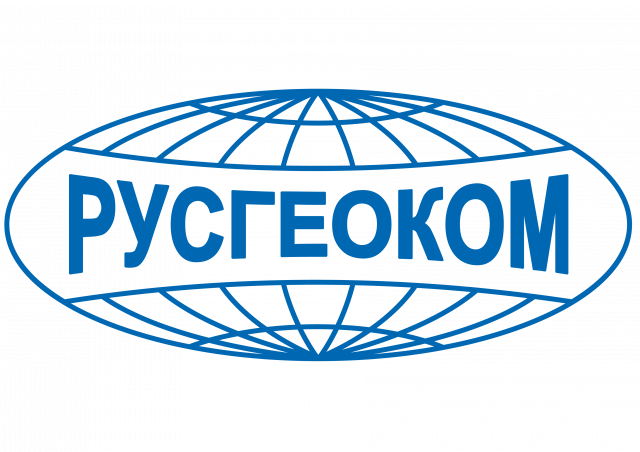
Основные направления Контрольно-измерительные приборы Все контрольно-измерительные приборы, представленные на нашем сайте, прекрасно зарекомендовали себя в реальных условиях эксплуатации. Широкий ассортимент позволит вам выбрать прибор для решения именно вашей…
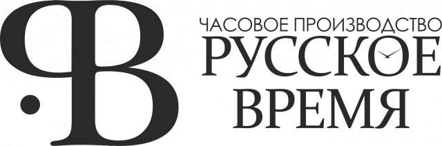

«С.О.К.» (Сантехника. Отопление. Кондиционирование) — независимое издание, ежемесячный научно-технический журнал для профессионалов в области инженерных систем зданий. Выходит с 2002 года. Тематика: водоснабжение и водоотведение, отопление и ГВС,…
Ваш DIY партнер Производство и дистрибюция ручных и малярных инструментов Tulips tools, Tulips decor, Armero, Avanza

Компания sv-opt Предлагает к вашему вниманию огромный выбор разносторонних товаров: Ручной инструмент садовый инвентарь электронные принадлежности газовые горелки туристическое оборудование поливочный инвентарь снегоуборочной инвентарь хозяйственные товары тв товары…

Мы — современный производитель сварочного оборудования и расходных материалов под брендом «ПРОФЕССИОНАЛ». Наша миссия — дать сварщикам и промышленным предприятиям доступ к премиальному качеству по обоснованной цене. Наша…

Производство и продажа садового оборудования и их запчастей. Производство и продажа садового инвентаря, садовой техники, расходных материалов для сада. Также производство и продажа ручного, слесарно-монтажного и электроинструмента. Исследования…

Оптовая торговля электроинструментом и оборудованием ALTECO: строительное, силовое, сварочное, тепловое и компрессорное оборудование. Надежное качество для профессионалов и мастеров.

Наши юристы с 2005 года осуществляют юридическое сопровождение деятельности компаний из России и СНГ на территории материкового Китая, Гонконга, Тайваня. Консультируем российские компании при выходе на китайский рынок,…

ООО «СКАНЛИНК» — белорусская компания, работающая на рынке с 2000 года. Компания специализируется на поставках силовой, садовой и мототехники, развивает собственное производство и реализует проекты для промышленного и…
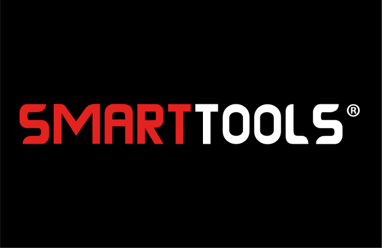
-SMARTTOOLS — надёжный поставщик аккумуляторных, электрических и ручных инструментов для строительства, ремонта и профессиональных работ. Мы предлагаем современный ассортимент инструментов, сочетающих мощность, удобство и долговечность, чтобы каждая задача…

Союз Независимой Инструментальной Розницы (СНИР). Общественная некоммерческая организация СНИР образована в начале 2020 года собственниками и руководителями ряда крупнейших розничных и оптовых компаний, специализирующихся на продажах инструментов, техники…

STAVR – российская торговая марка электроинструмента, с увеличенным ресурсом. Начиная с 2008 года российские специалисты разрабатывают, производят и осуществляют поставки электроинструмента во все регионы России и страны Ближнего…
«СТИНКО» — это торговая компания, уверенно и динамично работающая на рынке оптовых продаж бензо-, электро- и деревообрабатывающего инструмента в России и странах СНГ. Мы предлагаем широкий ассортимент товаров…
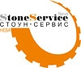
торгово-консультационный центр по строительному и камнеобрабатывающему инструменту. С 2002 г. осуществляем оптово-розничную торговлю алмазным, абразивным инструментом, оборудованием, для строительства и обработки камня. Имеем богатый практический опыт работы, что…

Будучи основанным в 2013 году, предприятие выдержало проверку временем, при этом сохранив желание ставить перед собой амбициозные цели и, главное, успешно реализовывать задуманное. Особой вехой стоит 2017 год,…
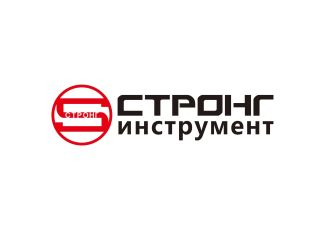
Группа компаний "STRONG" предлагает широкий ассортимент профессиональной оснастки для ручного электроинструмента, а также резьбонарезной, измерительный инструмент и все возможные расходные материалы. Наша работа и цель : Группа компаний…

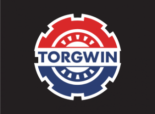
TORGWIN — международный промышленно-торговый холдинг с более чем 20-летним опытом разработки, производства и оптовых поставок профессионального инструмента, оснастки и расходных материалов. Мы объединяем собственное производство, логистику и сервис,…

ООО "Тех-Трейд" является официальным импортёром нагревателей воздуха торговой марки Arcotherm производства завода Biemmedue S.p.A. на территории Российской Федерации. Завод Biemmedue S.p.A. - является лидером по производству тепловых нагревателей…

ООО «ТЕХПЛАСТ» производит и реализует широкий ассортимент хозяйственных товаров из пластмасс для сада, строительства и уборки. Компания выпускает строительные ёмкости, садовый и уборочный инвентарь, лопаты, скребки и другие…

Торговый дом «АВТОграф» Основан в 1999 году и является ведущей организацией группы компаний. ТД «АВТОграф» специализируется на федеральной дистрибуции абразивных материалов, полировальных систем, окрасочного оборудования, ЛКМ, расходных материалов…

Тракторный завод РУСИЧ (TZR) — это динамично развивающееся российское предприятие, специализирующееся на производстве и поставке техники для сельского хозяйства, дачи, мастерской и строительства. Основные направления: Минитракторы и сельхозтехника…
«ТРАСКО» – одна из крупнейших транспортно-логистических компаний в России, предоставляющая полный комплекс услуг по грузоперевозкам. Мы осуществляем доставку автомобильным, воздушным, ж/д и морским транспортом, предлагая надежные и эффективные…
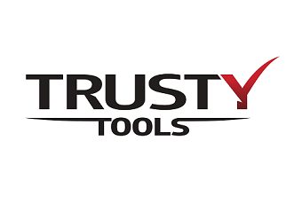
Трасти-Тулс российская компания основанная в 2014 году. Работает в сфере крепежа и инструментов для каркасного домостроения. Компания специализируется на гвозде- скобозабивных пневматических пистолетах и аксессуарах к ним. Выпускает…

Компания «Трио Диамант ЛТД» более 10 лет производит алмазный и пильный инструмент под собственными торговыми марками TRIO-DIAMOND, HILBERG и Mr. ЭКОНОМИК и является лидером своей сферы Мы предлагаем…

Группа компаний ТСС - крупнейший производитель и поставщик дизельных электростанций, бензиновых генераторов, строительного оборудования, сварочного оборудования на территории России. С 1993 года успешного опыта, более 30 000 квадратных…

ТОВАРЫ ПРЕДСТАВЛЕННЫЕ В КАТАЛОГЕ: ТЕЛЕЖКИ САДОВЫЕ, ИЗОЛЕНТА, ТРИММЕРНАЯ ЛЕСКА, ОПРЫСКИВАТЕЛИ (ПУЛЬВЕРИЗАТОРЫ), ПЕНА МОНТАЖНАЯ, ПИСТОЛЕТЫ ДЛЯ МОНТАЖНОЙ ПЕНЫ И ТП.

УРАЛБЕНЗОТЕХ – это компания с многолетним опытом разработки, производства, экспорта и успешной реализации садовой техники и бензоинструмента. Сотрудничество с нами – залог успешного бизнеса. Наша компания работает с…
Компания «Уралоптинструмент» основана в 1997 году. За период существования пройден большой путь со сложностями и успехами. Своим трудом мы заработали высокое доверие покупателей и, на сегодняшний день, являемся…

Наша фирма специализируется на фрезах для деревообработки. Модельный ряд компании включает разнообразные фрезы по дереву с твердосплавными ножами высшего уровня.

ООО «Центр Метиз» - это стержень Объединения «РосМетизХолдинг», работающего на метизном рынке Российской Федерации более 16 лет. Наша компания специализируется на пяти основных направлениях: Комплексное снабжение промышленных предприятий…
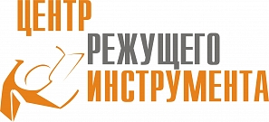
ООО 'ЦРИ' - производство и продажа режущего инструмента и расходных материалов для деревообработки и мебельного производства бренда WOODWORK, единственный представитель в РФ, РБ и РК завода CMT Utensili…

ЧЕБОПТ — торгово-производственная компания с многолетним опытом работы на российском рынке. Компания работает с 2002 года и сегодня объединяет несколько направлений: оптовую торговлю, собственное производство, развитие собственных торговых…

Armytek — это всемирно известный бренд с более чем 17-летним опытом разработки и производства высокотехнологичных фонарей, автофар, зарядных устройств и аксессуаров. Производственные мощности Armytek включают современные сборочные линии…
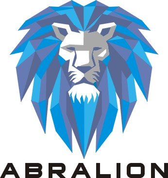
ABRALION — бренд профессионального инструмента и расходных материалов для строительства, ремонта и промышленного применения. В ассортимент ABRALION входят алмазные диски, отрезные и шлифовальные круги, сверла по металлу, буры…

30 лет компания ЭКСПЕРТ разрабатывает и производит в России всю линейку мешков-пылесборников и комплектующих для строительных, профессиональных и бытовых пылесосов. В ассортименте — более 1000 наименований продукции: многоразовые…

Электротехнический завод «КВТ» — ведущее российское предприятие по разработке и производству кабельной арматуры и электромонтажного инструмента. Под популярной торговой маркой «КВТ» выпускается более 7000 наименований продукции, сопоставимой по…
Электротулс — производитель, специализирующийся на электроинструментах и садовой технике и инструменте. Мы не просто торговая компания: у нас есть собственный завод, собственная цепочка поставок и профессиональная команда по…

Оптовые поставки электроинструментов, станков, садовой техники, сварочного оборудования, компрессоров, насосов, моек высокого давления, воздухонагревателей, генераторов, измерительной техники.

ЭНГЕЛЬС — это отечественный бренд электроинструментов для профессионального использования от завода—производителя в городе Энгельс.

Официальный импортёр и представитель торговых марок DLT, BIHUI, RollingDog, MAV на территории СНГ. Оптовая продажа высококачественного инструмента для строительства и ремонта, а также лакокрасочной продукции. Основные направления: инструмент…
Участники не найдены. Попробуйте другое название или сбросьте фильтры.